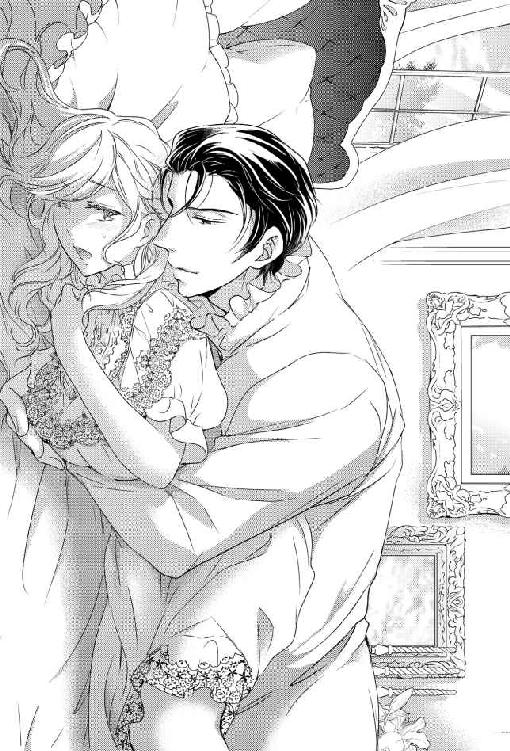
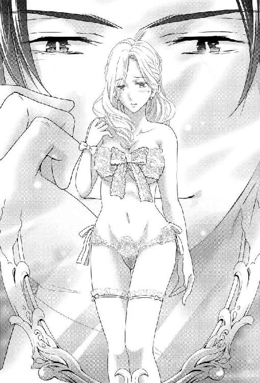
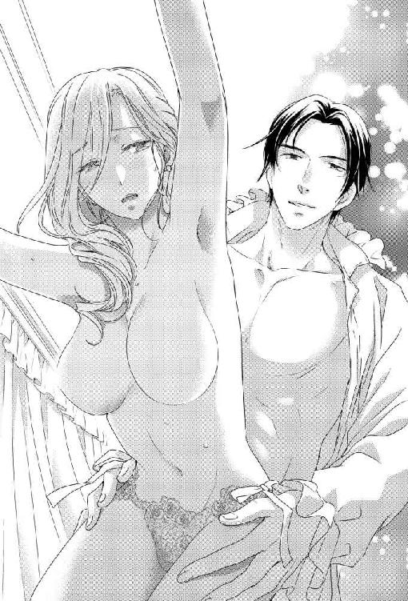

| 奥様、「元」旦那様はお亡くなりになりました (LUNA文庫) | |
| 深森 ゆうか | |
| 天海社／LUNA文庫 (2017) | |
奥様、「元」旦那様はお亡くなりになりました
［著］深森ゆうか
［イラスト］えだじまさくら
◇第一章 以前の夫は亡くなったようです
シンシアは自分のしでかしたことにただ、呆然としていた。
目の前には血を流して床に倒れている夫、クロードがいる。
「奥様、今の音は......？」
家令のハドリーが、何度ノックしても応答のないことに痺れを切らしたのか、執務室に入ってきて部屋の惨劇に一瞬動きを止めた。
「だ、旦那様!?」
ハドリーは倒れているクロードに素早く駆け寄ると、廊下でこちらを覗いている執事とハウスキーパーに「医者を呼ぶんだ！ 至急に！」と叫ぶ。
「私......わ、私......」
大変なことをしでかした。目に見える状況に、ようやくそれだけ理解したものの、まだ頭がついていかない。
「奥様......？ まさか、奥様が？」
床に散らばる花瓶の破片と絨毯に染みる水。そして麗しく花弁を広げていた花達も無惨に、ごみ屑のようにその花弁を落とし、ただ誇り高い香りだけを残していた......。
◇◇◇◇◇
すぐにハドリーに手を引かれてシンシアは、自分の個室に閉じこめられた。
普段、自分専用として使用している部屋だが、今はハドリーによって部屋の外側から鍵を掛けられてしまっている。
メイドが夕食を持ってきてくれたが、使用人が扉に控えていて、まるで自分がメイドに危害を加えないように見張っているようにも見えた。
日が落ちて月明かりが部屋に差し込む頃になってシンシアは、ようやく自分がしでかしたことに頭が巡るようになった。
（そう......私、夫を......クロードを......殺した......）
目を閉じれば、そのときの様子が脳裏に浮かび衝撃に手が震えてくる。
『......なんだ？ この匂いは？』
『あの、ギブスさんの奥様が庭に植えた百合が咲いたからと、持ってきてくださって......』
クロードの低い声音に不快感が混ざっている。
また彼の気に入らないことをやってしまったのかと、シンシアはおののきながら答える。
『お嫌いな香りでしたか。申し訳ありません、すぐに片づけます』
『好き嫌いの問題ではない。神聖な男の仕事場に、こんな香りの強い花を飾ろうなど......！ 適した場所に飾れ！』
シンシアはただ、クロードの秘書であるギブスの妻からの届け物を、よかれと思って部屋の端に飾っただけの行動だった。
ふとしたところで、この花が視界に入り、少しでも気が休まり疲れがとれればと。
余計なお世話だったことに、シンシアは急いで棚から花瓶を持ち上げ、慌てて執務室から出ていこうして――足がもつれてしまった。
何せ、すぐ横に怒りの波長を身体全体に纏わせている夫がいるのだ。
普段から怖くて怯えた猫のようなのに、彼の横を通らないと部屋から出ていけないとは。
その数秒間が怖くて足がもつれてしまうなんて、臆病者でどうしようもない。
『――あっ！』
手からこぼれ落ちそうになる花瓶を慌てて受け止めたが、最悪なことに百合の花粉がクロードの背広の袖についてしまった。
花粉は事前に切り取るべきだった、そう思っても遅い。
『......こ、の......!! 大馬鹿者!!』
凄まじい怒りが眉尻を上げさせ、ぴくぴくと動く。同時、彼の右腕が宙を仰いだ。
――叩かれる！
咄嗟だった。
そこにシンシアに明確な意志はない。ただ、防衛反応で手が動いただけ。
ガシャン、と激しく砕ける音と、自分の手に響く堅い手応え。
花瓶で叩いてしまった夫はあっけなく床に倒れ込み、額から血を流していた......。
はあ、とシンシアは悲壮感を隠すことなく、深く息を吐きだす。
いつも自分は、クロードが癇に障ることしかしない。
気がつけば夫婦らしい会話もなく、ただ夫に説教をされる毎日。
自分が人よりおっとりで、気が利かないであろう自覚はある。彼とは見合いで、政略婚ではあったが、それでも縁があって夫婦になったのだから、彼と寄り添っていこうと決心して妻となった。
――だけど。
クロードは、けっして自分に優しい言葉をかけることはない。
いたわりの言葉もない。
「愛してる」という言葉は期待していなかったが、それでも人並みの夫婦になれるだろう――そう考えていただけに、彼の態度も言葉も、ただただ傷つくだけだった。
自分と向き合うときも、会話をするときも、いつもムッとして口角を下げて、だんだん苛つかれて最後には必ず怒鳴られてしまう。
（彼のだす空気に、気圧されてしまうのが悪いのだけど......）
家計に逼迫していたシンシアの家庭は、家筋だけは大変によかった。
古くから続く家系だったが、経済状況がどんどんと悪くなっていき、土地を切り売りしていって最後には、家族が身を寄せて暮らす小さな屋敷しかなくなってしまった。
それもこれも祖父、父、兄と、まったく商才のない当主が、三代も続いたためである。
そこに産業革命によって新しい社会の支配的階級になったベックウィズ家から、弁護士を介し連絡がきた。
そのベックウィズ家から『借金を肩代わりする代わりに、そちらが興していた事業から手を引くように』と打診を受けたのだ。
要するに事業はこちらが引き継ぐ、ということ。
そしてシンシアの家は了承するとともに、ちょうど結婚適齢期の彼女をも差しだした。
すべて放棄しても、家同士が繋がっていれば後々で援助を受けることができる。それに借金しかなかったシンシアの家には、彼女に求婚をする男など出てきやしなかったのだ。
シンシアの容姿は、そう悪くない。
栗毛のうねる髪とライトブラウンの瞳に、あまり社交的ではなく家に閉じこもった生活をしていたせいか、色白のきめ細やかな肌をしている。
それにはっきりとした顔立ちで、見た目がよかった。
反して性格は大変地味で派手な格好は好まない――要するに倹約質素な生活が身についている女性だ。
すでに当主となっていたクロードも独身で、特に断る理由がなかったのか、堅実謙虚なシンシアの性格を気に入ったのか。あっさりとその条件を受け入れた。
才能の違いというのだろうか、シンシアの家から受け継いだ事業をクロードはわずか一年で、あっという間に立て直した。
それとも、祖父や父や兄の才能が皆無に等しかったのか。
シンシアの家族は現在、片田舎で農園を拓いてのんびりとやっていて、都会にいたときよりも皆、血色よく生き生きとしていた。
シンシア同様、のんびりとした気質の家族には、こうした環境のほうが合っていたのかもしれない。
家族に会いに行く度にシンシアは「私もここで暮らしたい」と何度口から出かかったことか。
クロードと結婚をして早二年――。
日に日にクロードの態度は硬化していき、シンシアもそれに追われるように自信をなくし、彼の前では萎縮して、おどおどとしてしまうようになった。
クロードはきっと「有益な貴族の娘」が欲しかったのだ。貴族社会に有利に働きかけることができる。
ただ、それだけ。
貴族の出身でも華やかな容貌ではなく、洒落た会話もできない、冴えない女をもらっても、ただ苛つくだけなのだろう。
何をするにものんびりで、もたつく女などつまらない、そう思っているに違いない。
それは、彼の態度を見れば明らかで、シンシアはどうにかして夫婦の会話を増やそうと努力してみても空回りどころか、彼を怒らせるという毎日を繰り返していた。
怒鳴られれば怒鳴られるほどシンシアは、身体だけでなく心も萎縮させていき、
「もう、努力することはやめよう」
と、大息とともに口にだすのに――。
けれど、毎日のちょっとした変化に思わずクロードに語りかけてしまう。
今日も、美しく咲く百合の花を見てほしくて、仕事ばかりしている彼の気休めになるようにと思って、つい、あんなお節介なことをしてしまって――。
「......彼を殺してしまった」
（こんな恐ろしいことをしてしまって、私も『死』をもって償うしかない）
シンシアはフラリと立ち上がると、オーク素材の事務机に座り手紙をしたため始めた。
家族に渡してもらう分と、この屋敷で働く皆々へ読んでもらう手紙、二通だ。
シンシアとクロードが住んでいるこの本宅は三階建てだ。真下は煉瓦で舗装されているからベランダから飛び降りれば、きっと死ねる。
でも自分は抜けているから、完璧だと思って飛び降りても、もしかしたら助かるかもしれない。
（確実に死ねるように、事前に首とか切ったほうがいいかしら......？）
でも、首を切ってベランダを乗り越えて飛び降りられるかしら？ とつらつら考えながら遺書を書き進めていく。
ノックの音に、シンシアはビクリ、と肩を揺らした。
「......奥様、私です。ハドリーです」
「......はい」
シンシアは書きかけの手紙を、素早く引きだしの奥に入れる。
医師を呼んで、それからどうしたのだろう。
考えてみたら、気を失ったとも考えられる。それでも、自分のしでかしたことは覆せないが。
震える足で椅子から立ち上がり、ハドリーと向かい合う。
ハドリーは、いつものように生真面目な態度を崩さずに淡々としてシンシアに告げた。
「奥様、元旦那様はお亡くなりになりました」
◇◇◇◇◇
膝から崩れ落ちそうになるのをシンシアは懸命に耐え、ハドリーの後をついていく。
着いた場所はクロードの寝室で、シンシアは血の気が引き白を通り越して青い顔で、亡くなったクロードと対面することになる。
「奥様、お入りください」
先に、ハドリーが寝室の扉を開けてくれる。
名ばかりの妻だとしても、夫の死を見届けなければ。罪を償うのはそれからでいい。
シンシアは、震える足取りで一歩寝室に入る。
天蓋つきの寝台は、もともと夫婦で寝られるようにキングサイズにあつらえている。
その中央に彼はいた。
「......えっ？」
寝台にいるクロードの様子を見てシンシアは、ライトブラウンの瞳を大きく見開き、ぽかんと口を開けた。
クロードが目を開けている。
ヘッドボードにたくさんのクッションを置いて、そこに背中を預け、座って寝台にいた。
「い、生きて......」
緊張が一気に緩みシンシアは腰が抜けそうになったが、ハドリーに支えられてようやく立ち直る。
「ひ、ひどいわ、ハドリー......！『亡くなりました』だなんて」
彼の悪戯だったと、シンシアは泣き笑いの顔をハドリーに見せる。
――だが、彼は生真面目な表情を崩さず、それどころか深刻さを増したように顔を曇らせる。
「......ハドリー？」
「いえ、奥様。......確かに元・旦那様はお亡くなりに――死亡したのです」
「......えっ？」
『元』？
意味がわからず、シンシアはハドリーとクロードの両方を見比べる。
「とにかく奥様。クロード様とお話を。さすれば、おわかりになるでしょう」
そうハドリーに促されて、ゆっくりとクロードの傍へ向かう。
クロードは、額を殴打された際に切れてしまい出血。止血をし、縫合したとハドリーが教えてくれた。
頭なので、出血が多く見えただけで浅くて小さな傷だったのは、幸いだったのだろう。
クロードの額には包帯が巻かれており、それがシンシアには痛々しく見える。自分がした罪に胸を抉られる。
「......クロード？」
シンシアは神経に障ることがないように、ゆっくり低い声で彼に声をかける。
クロードは、きょとんとした様子でシンシアを見上げる。
初めて見る表情だ。
（......子供みたい）
「あの、クロード......ごめんなさい。痛かったでしょう......？」
と、聞いてシンシアはしまった、と首を竦める。
痛いなんて当たり前だ！ ――なんてまた怒鳴られるような間抜けなことを聞いてしまったと、びくつく。
だが、クロードは驚いたようにダークブラウンの瞳をパチパチと瞬かせながら、自分の額に巻かれた包帯に触れた。
「これ、シンシアがやったの？」
「えっ？ ええ......」
「どうして？」
「あ、あの......」
シンシアは、後ろに控えているハドリーに顔を向け、視線を投げかける。
シンシアに促されハドリーは、会話を補うように間に入ってきた。
「クロード様、先ほど申しあげたのですが、喧嘩で頭に怪我をしたのです」
「どうして？ どうして『僕』と彼女が喧嘩するの？」
――『僕』？
シンシアは首をかしげる。
クロードは自分自身を語るときは『私』と言っていた。
（それに......なんだか言動が、幼いというか。ううん、違う。もっとこう......女性らしいというか......）
「何の理由で喧嘩なんて？」
喧嘩の理由も覚えていないようだ。シンシアは記憶に残る感触にまた震えだす。
（だけど、ちゃんと話さなくては。あの場面は私しか覚えていないのだから）
「シンシア。ゆっくりでいいから話して？ 立っていないで椅子に座るといいよ」
彼が今まで、こんな優しい言葉をかけてくれたことなどあっただろうか？
シンシアは声が出ないほどに驚いた。驚きすぎて、腰を抜かしたほどだ。
「奥様、椅子を」
ハドリーが、腰を抜かしたシンシアを椅子に座らせる。
シンシアの表情は驚いたまま固まっていた。
（い、今までだったら『ずっと立っていられないほど君の足は弱いのか？ なんて惰弱な』と叱咤するのが関の山なのに！）
優しい口調に穏やかな表情のクロード。
そんな彼を目の前にしてホッとしていいはずなのに、混乱してしまったシンシアは、どこから話を始めていいのやら、頭の中で目まぐるしく渦を巻く。
ふいに膝の上で拳を握るシンシアの手を、クロードの掌がやんわりと包んだ。
「シンシア、教えて。大丈夫、僕の怪我は大したことはないし。貴女を責めるようなことなんてしないよ」
「ど、どうして？」
責めるようなことはしないって――今までのクロードからは絶対聞けない言葉だ。
「だって、僕達は夫婦でしょう？ それに穏やかなシンシアが僕に花瓶で殴るなんて、よほどのことがあったと思うの」
ね？ だから落ちついて話して？ と微笑んできて、シンシアはどうしていいのかわからず、傍に控えているハドリーに視線を移す。
ハドリーは「お話を」と促すように首を縦にふる。
このクロードの態度も口調も、実は演技ではないのか？ とシンシアは疑いを強めていくが、ここで誤魔化しても自分の罪は消えない。
「わかったわ......。包み隠さずにお話しします」
乗せられたクロードの、温かい手を信じるしかない。
シンシアは思い切って口を開いた。
話していくうちにみるみると、クロードの様子が変わっていった。
どんどん真っ青になっていき、それから血の気が引いたように真っ白になり小刻みに震えていく。
そして最後には、ハラハラと目から涙を流し、
「うそおおおおおおおおおおおお!!」
と、寝台に顔を突っ伏して泣いてしまったのだ。
「えっ？ ええっ？ クロード？ そ、そんな泣かないで！」
「だって！ だって！ 僕......！ そんな乱暴なことをシンシアに？ ひどい！ ひどいよ！ 僕の馬鹿!!」
今までの彼だったら怒鳴るか、物に当たるかだ。乙女のように泣きだして自分自身を責め始めるなんて......。
（これは、おかしいわ。絶対おかしいわ。今までのクロードじゃないわ）
「ハドリー、クロードはどうなってしまったんです？ やはり、花瓶で殴打したのが原因ですよね？ お医者様はなんて話しておいででした？」
「奥様。とにかく今は、旦那様をお慰めするほうが先かと」
そうだ、ショックを受けているクロードをまず、なんとかしないと。
「ク、クロード。どうか落ちついて。私は大丈夫ですから。それより私が花瓶をぶつけてしまった額は？ まだ痛むんじゃないかしら？ あまり興奮したら傷が開いてしまうわ」
「......シンシア」
クロードが、おそるおそる顔を上げてシンシアを見つめる。
「どうして、そんな優しくしてくれるの？ 僕、シンシアにひどいことをしたのに......。せっかく綺麗な花を飾ってくれた貴女の思いやりを、無碍にしたのに......」
「でも、香りの強い花は、やはり仕事の場にはふさわしくなかったと思いますから、あのときのクロードの怒りは妥当だと......」
「だからといって、怒鳴って最後にはシンシアに殴りかかったなんて......男として最低だわ」
ぐすぐす、と鼻を啜りながら自己嫌悪に陥っているクロードにシンシアは、ハンカチで彼の頬の涙を拭ってやる。
「でも、私は貴方を花瓶で殴ってしまったのよ」
「優しいね、シンシアは」
そうシンシアに泣き笑いするクロードは、まるで別人だ。
今までは、絶対にこんな表情なんて見せなかった。
しかも――こんな可愛らしい表情をするなんて、思ってもみなかった。
いつも口角を下げて、眉尻を上げて不機嫌な表情しか見せたことがなかったのに。
（いいえ、一度だけあったわね）
確か結婚式のとき、困ったような恥ずかしいような、そんな表情でシンシアを見つめて「なかなかだ」とそう一言告げた――。
そんな思い出なんて忘れてしまうほど、クロードは仏頂面しか見せなくなって、シンシアはいつも彼の顔色を窺って生活していた。
クロードはシンシアのハンカチを受け取ると、それをキュッと握る。
「このハンカチ、貸して。今度刺繍して返すね？」
「えっ......？ ええ......」
（刺繍？ 刺繍って？ あの、針と糸を使っていろいろな模様を作る......あれよね？）
「クロード。貴方、刺繍をする趣味ってあったの？」
今まで一緒にいて聞いたことも、本人が刺繍をしているところも見たことがない。
不思議そうに尋ねたシンシアに、クロードも不思議そうな顔をして口を開いた。
「あら？ 仕事の合間に、たまにやるわよ？ 一緒にしたことなかったかしら？」
――何を言ってるのおおおおお!?
当たり前のように答えられて、シンシアはますます混乱する。
「ハドリー......っ！」
衝撃に耐えられずにシンシアは、とうとうハドリーに泣きついた。
◇◇◇◇◇
「これは、いったい......！ どうしたんです？ 夫は、クロードは、いったいどうなってしまったんです？」
明らかに今までと様子の違う夫に、シンシアは混乱したままだ。
それでも、ニコニコと微笑むクロードを「今日は一日横になっていて」と、眠り薬を含む化膿止めを飲ませて寝かしつけたところだった。
厳しい眼差しに態度。誰にもその態度を崩さず、彼の性格が表れていて妥協の許さない仕事ぶりは一目置かれていたが、それを周囲の者にも求めるので一部の者に敬遠されていた。
その姿勢は家庭でもそうで――シンシア自身も彼といると、どうしても姿勢を正してしまっていた。
いつも緊張感のある夫婦関係だったのが招いた、今回の事件。
シンシア自身は「夫を殺してしまった。罪に問われる」からクロードが生きていたことで「いくら夫婦でもクロードは許してくれない」と思ったが、状況は彼の変化で大きく変わった。
オロオロとしているシンシアにハドリーは、ティーウィズミルクをいれてくれた。
「奥様、とりあえず飲んで落ちついてください。医師の見立てと、私の見解をお伝えします」
「ええ」とシンシアは自分の好きな飲み物を口にして、落ちつこうと試みる。
一口飲んでは、はあ、と溜め息を吐きだし、また一口飲んで、はあ、と繰り返す。
それでも、だんだんと落ちついてきて、自分の置かれた状況を受け入れ始めた。
「......ありがとう、大分落ちつきました。説明してください」
ハドリーは、重々しく頷いた。
「どうやら、以前の旦那様の性格が戻ってきたようなのでございます」
「......はい？」
ハドリーの言葉にシンシアは思わず、抜けた声をだしてしまう。
それに動じずハドリーは言葉を続ける。
「実は今までの、シンシア様といらした旦那様は、お亡くなりになったお父様そのものの性格なのです」
「......えっ？」
「旦那様、いえ、クロード様とお呼びしましょう。クロード様は昔、たいへん大人しく、お優しく穏やかなお方でした。詩や歌を愛し、静かな環境を好み、お菓子やお茶を嗜みながら刺繍やレース編みなど、手先を使う趣味に没頭しておられました。――しかし、それをよく思わなかったのがクロード様の亡き父君でした......。『情けない、これが跡取りとは』と顔を合わせる度に叱咤し、折檻をするようにまでなってしまいました」
「まだ折檻までいかなかったけど、なんだか、今までのクロードと私の関係に似ているわ......」
ハドリーは頷き、淡々と話を進める。
「クロード様もそんな父君を恐れて、父君の前では男らしく振る舞うようになっておりました。そうして騙していたのですが、ひょんなことでばれてしまったのです。父君は普段、愛人と他の屋敷に寝泊まりしておられて本宅には滅多に帰ってはこられませんでした。ですので、たまに帰ってくるときにだけ勇ましく男らしい姿を見せて満足させればいいと、そうやってやり過ごして、クロード様は好きな趣味を続けていることを、ひた隠しにしておいででした。なのに――何か気になったのでしょうか？ 父君が事前に知らせもなく突然、お帰りになったのです」
『儂の目を盗んで、まだこんな女々しいことを続けていたのか!!』
「父君はクロード様を持っていた杖で、気を失うまで叩き続けました。......そうして目覚めたときには、クロード様は別人になっていたのです。まるで父君そのままの、高圧的でぞんざいな性格になっておりました」
「......ひどい。なんて父親なの......」
黙って聞いていたシンシアだったが、その内容に憤怒も交えて吐き捨てる。
クロードと結婚したときには、すでに彼の父親は他界していて知らなかった。
暴力で支配をした父親がいたなんて。
「私と長く勤めております医師は、そのときに以前のクロード様は父君に殺されてしまったのだと思っておりました。そして新しい人格ができあがったのだと。父君の理想に添うような、父君に似た性格のクロード様が――しかし、前のクロード様は死んではいなかった！ 今回の奥様の殴打で奥様と結婚したクロード様は亡くなって、前のお優しい穏やかなクロード様がお目覚めになったのでしょう」
今まで淡々と話していたハドリーが感動にハンカチを取りだし、己の目頭を拭う。
けれども、シンシアは釈然としなかった。
「でも、ハドリー。前の人格のクロードが現れたのだとして、なぜ私のことを知っているのでしょう？ しかも、今までずっと一緒に暮らしていたように接してきました」
「これは医師の見解ですが......『表に出てこない人格でも、状況を把握している人格がある』そうです。その場合『いつも表にいる人格は、裏に人格があるのに気づいていないことが多い』そうですよ。そのほうが、いざ変わるときに変わりやすいとか......」
「では、今まで死んだように見せかけて隠れていた『優しいクロード』はずっと私を見ていたから、一緒に過ごしているように思いこんでいるの？」
「クロード様を見ていると、そのように取れますね」
はあ......とシンシアの口から息が漏れる。
「クロードが無事だったのは、よかったと思います。殺してしまったと思ったから。......でも、これからどのように彼に接していいのか......」
「そうですね......。とりあえず、クロード様には療養と称して、しばらくお仕事はお休みいただいたほうがいいかと」
「そうよね......。ギブスさんや弁護士さんや他の方々にも、ご迷惑をおかけすることになるけれど......」
「大丈夫かと思います。今のところ、難しい案件は抱えていらっしゃらないはずですから」
シンシアの言葉にハドリーは答えて、いつものように恭しくお辞儀をした。
◇第二章 初めましてのクロード
シンシアは次の日、ハドリーと医師と三人でクロードに「額の怪我が完治するまで、しばらく仕事を休むように」と説得にかかった。
仕事人間だったクロードは嫌がるかと思ったが、今のクロードはそうでもないらしい。
「こんな包帯を巻いたまま仕事だなんて恥ずかしいから、しばらく休むと言おうと思っていたの」
そう、あっけらかんと承諾した。
「クロード......本当にごめんなさい。もしかしたら額に傷跡が残るかもしれないって、お医者様から伺って......」
それに、咄嗟とはいえ花瓶で殴ったのだ。下手をすれば本当に絶命していたかもしれない。
自分の罪は免れない。
「警察を呼んでもいいのよ......？」
シンシアは、絞りだすようにクロードに告げた。
決心してようやく口にだしたのに反して、クロードの答えはあっさりだ。
「大した怪我でもないのに？ 『派手な夫婦喧嘩ですね』で済まされてしまうよ」
「で、でも......」
「当事者の僕が大丈夫って言ってるんだから、大丈夫！ そんな泣きそうな顔しないで。ね？ そうだ！ しばらくお休みならヴァカンスに行きましょうよ！」
名案！ とでもいうように両手を合わせシンシアを誘うクロードは、いつもよりずっと楽しそうで若々しく見える。
（というより、なんか仕草が優しすぎて女性っぽい......）
シンシアにとって一番戸惑うのは、クロードのこの、どこか淑やかで女のような仕草や口調だ。
傲慢な態度や口調に毎日振り回されていたシンシアは、すぐに慣れそうにない。
しかしながら、今までのクロードよりはずっと親しみやすく付き合いやすそうだ。
少なくとも手を上げようとしたり、怒鳴ったりすることはなさそうだとシンシアはホッとしていた。
（だって、自分がしていたことにショックを受けていたもの）
でも、とハドリーの、医師から聞いた話を思いだす。
今のクロードは亡くなったクロードの陰に隠れてこちらを窺っていたということだが、彼が自分に怒鳴ったりしていたことは知らなかったのだろうか？
（お医者様じゃないから、どうしてなのかそこまで詳しくわからないわよね......。お医者様だってわからないかもしれないし）
いずれ聞けることもあるだろうけれど、今は新しいクロードに慣れることが大切だ。
「初めまして、クロード......よね」
シンシアは一人呟きながら、ヴァカンスの準備に取りかかった。
◇◇◇◇◇
南西部にある海岸は、リゾート地として有名だ。
生活に余裕のある階級は、ヴァカンスを満喫する保養地の候補としている。
ベックウィズ家のヴィラもあり、いつでも利用できる。
だがシンシアはクロードと結婚してリゾート地で過ごすなんて、今回が初めてだった。
ちょうどヴァカンスが始まった時期。リゾート地である海岸も、桟橋も、海岸にごく近い場所に並ぶマルシェも、観光客で賑わっていた。
シンシアはベックウィズ家が所有している、二階建ての白い屋敷を見て「素敵」と歓声を上げた。
白い壁には青々とした蔦が張り巡り、屋根はオレンジ色。そして趣味のよいアーチ窓。入って玄関の踊り場の天井は高く、開放感に溢れている。
室内も外観と同じように白で統一しているようだ。明るい日差しに見合うように南国の植物が幾つか配置されて、それが部屋に彩りを与えて華やかにしていた。
「シンシア！ こっち！」
一緒に入ってきたクロードが、二階に上がりながら手招きをする。
緩やかな螺旋階段を上がると、クロードがまたシンシアに手招きをして誘導する。
「ねえ？ どこへ行くの？」
一階より細かく部屋を区切っているらしく、扉の数が多い。
ゲストルームかしら？ と思いながら奥へ進むと、明らかに他の部屋と違う大きな観音扉の前にたどり着いた。
クロードは躊躇いなく開けて、「こっち！」とシンシアの手を引っ張っていく。
突然のクロードの行動にシンシアはギョッとして目を丸くした。こんな風に自分に触れてきたのは初めてではないだろうか？
「――クロード！ 足、速いわ！」
クロードの大きくて温かい手の感触に胸の鼓動が早まる。シンシアはそれに気づかないふりをして笑う。
そこは、低めの大きな寝台が設置されている寝室だった。
一瞬、身体をひきつらせたシンシアだったが、クロードがそこを通り過ぎて、大きな縦滑りの窓に向かったことにホッとする。
「ここの景色！ とっても綺麗なの！」
大きく造られたアーチの形をした窓の向こう――海岸が視界いっぱいに広がっている。
日を反射して砂場がキラキラと輝き、底が浅い部分のセルリアンブルーから、底の深い部分のコバルトブルーへ向かう海の見事な景観。
そして、それよりもずっと薄い空の色。
青い海と空を背景に構成された景色が息を呑むほどに美しく、シンシアは感嘆の息を吐いた。
時々、風が凪ぎ、海を波立たせてできる白い飛沫が目にまばゆい。
「綺麗......。こんなに景色がいいのね......」
「結婚してからずっと仕事が忙しくて、ヴァカンスにも行けなかったものね。この景色、ずっと前からシンシアに見せてあげたいって思っていたの」
「ありがとう、クロード」
クロードから、こんな思いやりの溢れた言葉をかけられるなんて思ってもなかった。
シンシアは自然、彼に微笑みかける。
「よかった。気に入ってもらえて」
クロードも、シンシアの笑みに応えるように微笑んできた。
笑った顔など見たことのなかったシンシアにとって、微笑まれる度に衝撃と、何ともいえない甘酸っぱい感覚が胸をくすぐる。
口調が優しくて穏やかなのはいいのだが、少々女性的なのは困りものではあるが。
「どうする？ これから」
「これから......？」
どきり。と胸が大きく鼓動を打った。
「ヴァカンスにきたのだもの。海で泳ぐ？ それともショッピング？ 観劇？ ビリヤードとかゲームを楽しめる場所もあるのよ？」
（あ、そういう......）
ここがベッドルームなので、つい情事のほうかと動揺してしまった。
（真っ昼間から何考えているのかしら、私ったら！）
「そ、そうね......。夕方まで散策したいわ」
邪な自分の考えを気づかれまいと、シンシアは極力自然を装う。
「じゃあ、海岸を散策して、それからショッピングしましょう！ 水着も買わないといけないし」
「水着......買わなくちゃ駄目？ 私結婚しているから、そんな肌を見せるなんて社会的によくないと......」
来る前に水着のカタログにも目を通したシンシアだったが、やはり躊躇う。
臑半分と腕位を晒すだけで露出度は低いようだが、それでもこれが『水着』だと思うと尻込みしてしまう。
「僕も一緒に入るから平気よ」
「ク、クロードも？」
「買い物があるから車をだすように伝えてくる。シンシアはお化粧でも直してて」
善は急げというようにクロードは、駆け足気味に部屋から出ていってしまった。
海岸はすでに大勢の観光客で賑わっており、活気に溢れていた。
シンシアはクロードに案内されて、海岸を巡り、それからビーチの中央にある桟橋を歩く。
南西部の日差しは、夏になると眩しくて刺激的だ。
住まいのある首都の、鬱蒼とした天気とは比べものにならない。
「お日様が出ているのって本当、ありがたいわね」
いつもの調子で、語りかけるように独り言を呟く。
最初はクロードに語りかけていたのだが、「女の話はくだらんことが多くて、返す気にならん」と言われてしまい黙っていようと心掛けた。
けれども、隣に人がいれば何気なく話しかけてしまう。そんなシンシアをクロードは独り言として扱って相手にしなかった。
「そうね。日差しって気持ちがいいわよね」
だが、今までの彼とは違う。
今のクロードは、シンシアの何気ない語りかけにもニコニコと応じてくれた。
リゾート地にくる道程でも、こうしてお喋りをして、彼のほうからも話しかけてきてくれて、シンシアにとって嬉しくも楽しいものだった。
小一時間ほど散策をして、その足でマルシェへ出向く。
しばらくヴィラで過ごすのだ。こちらで使用するものは現地で揃えたほうが早いだろうと考えてのことだ。
そこでクロードに真っ先に連れて行かれたのは――。
「こっちのストライプのものとピンクの、それとこの後ろにプリーツが入っている紺地のものを見せて」
「ほ、本当に買うの？」
店頭に飾ってあるカタログの中から、クロードがさくっと選ぶ。
「現物を見てから決めればいいじゃない？ それにこれから仕立てだから今日はまだ着用できないし」
「そうだけど......」
店員が奥から、指定した三着のサンプルを持ってくる。
どれも膝までのワンピースの上着に、脹ら脛の中間までの裾絞りの下衣。
下衣などドロワーズのように見え、シンシアは顔を赤くする。
（これじゃあ、下着と変わらないわ......！）
しかも、クロードと一緒にサンプルを見てるなんて。
「あ、あの私......。やっぱり、泳がなくていいわ」
「何言っているの？ これなんて可愛いと思うけど」
と、ピンクの水着を指さす。
「若くて独身女性向けだわ......」
確かに可愛いけれど、二十歳を過ぎた自分が着たら世間の目が厳しいだろう。
「そう？」
と、突然クロードの顔がシンシアに近づいてきた。
「――!?」
「この襟元にレースをつけたら、もっとセンスよくなると思わない？」
店員に聞こえないよう、そう耳打ちしてきた。
「......そうね」
一瞬、キスをしてくるのかと思って身構えてしまった。
（いやね......。こんな公衆の面前でするはずもないのに）
あまりに親しげなクロードの態度に、自分は何かを期待してしまったのだろうか？
気を取り直しシンシアは、クロードが奨めてきたピンクの水着に目をやる。
「襟は、レースにしたほうが......でも、それなら他の水着のほうが映えるかと......」
「こっちのストライプの水着は？ なかなか先進的なデザインだから、このままで十分素敵よ」
と、クロード。それなら、とシンシアはプリーツの入っている水着を手に取る。
「これなんかは？ この裾に刺繍なんてしたらきっと素敵だわ！」
「うん！ 素敵！ 店員さん、このプリーツの水着で頼むよ」
「――あっ......」
会話にのせられて水着を購入することになってしまって、シンシアは落ち込んでしまう。
「嫌だわ......」
つい溜め息をついてしまってハッと、クロードの顔を見上げる。
クロードは溜め息が嫌いだ。傍でついてしまえば雷が落ちるのは必至なのだが――。
「も、申し訳ありません。つい......」
「そんなに水着はいや？」
雷は落ちなかった。そればかりかクロードは可愛らしく小首をかしげている。
「だって......私、泳ぐのも水着を着るのも初めてよ？ しかも既婚者だし」
「いいじゃないの。先ほど海岸を散策して、たくさん押し車が海に入っているのを見たよね？」
「ええ......」
「あれは着替えとかはもちろんだけど、あの付近で泳げば目隠しになるから、ああやっているんだよ」
「あれはそういう......」
「それに僕も泳ぐから、ね？」
これは逃げることができなそうだ。シンシアは諦めて今度はクロードの水着を買うために、一緒にメンズの小売店に向かった。
さすが男性用は、女性のものと比べると露出度が高い。
だけど――。
「可愛くない」
シンシアの代わりにクロードが、ぽつりと呟く。
何の柄も飾りもない、シンプルな水着にクロードはあからさまにガッカリしている。
男性用の水着に可愛さなんて皆無だ。というより、男性物に可愛さを求めるのが間違っている。
「な、なら......このストライプに国旗の柄の水着はどうかしら？」
「囚人服みたいだわ」
クロードの感想に、店員が目を丸くして驚いている。
あれじゃない、これじゃない、と言って、店員をバックヤードとカウンターを何回も往復させてようやく決めたのは、スクエアカットの襟にウエストにベルトのようなポイントのある水着だった。
「前から思っていたんだけど、男性の衣服というものはなぜ、ああも飾りがないのだろう。毎日葬式に出席している気分よ」
「仕方ないわ。『堅実』が今の国の風潮だし」
クロードの不満にシンシアは、苦笑を浮かべる。
「百年前に戻りたいなぁ。せめて襟元をレースでお洒落にしたいわよ。毎日の仕事が本当に憂鬱」
今のクロードが、毎日仕事に出ていることになっている。
今まで、亡くなってしまったクロードが仕事をしていた。
（いったい、どこまで記憶が変わっているのかしら？）
「......ねえ、クロード」
「――あっ！ 見て、シンシア。あの店！ レース生地がたくさん置いてあるわ！」
「えっ？ あら、本当だわ」
クロードが指した小売店のガラスの店頭には、様々な種類のレースが芸術的に美しくディスプレイされていて、人目をひく。
「入りましょうよ。シンシアもレース好きじゃない！」
とキラキラとした眼をシンシアに向けると、彼女の手を取り小走りで店に向かう。
「あ......！ 待って、クロード。足が速いわ！」
クロードの記憶はどうなっているのか聞くのは、今は適さない場所だとシンシアはひとまず後回しにすることにした。
実はシンシアも「レース」と聞いて、ワクワクしている。
彼女もレースが好きで、様々な種類のレースを集めている。
質素な生活だったから幼い頃から華やかな衣装に憧れていたが、特に恋いこがれたのはレースだ。
少ないこづかいを、こつこつと貯めてはわずかなレースを買い、バッグや手袋など小物に工夫して縫い合わせていた。
それは結婚してからも変わらない。
クロード自身、妻であるシンシアに過度な買い物などしないよう口うるさく言っていたが、ほんの少しのレースを買うのは咎めたりはしなかった。
と、いうのも......。
「シンシア、見て。このレース、僕の会社の工場で縫ったものなの」
「まあ、そうなのね......！ 機械で織ったように見えないわ」
クロードが棚差ししてある、何重にも巻かれたレースの一つを取りだし、シンシアに見せた。
機械編みのレースは産業革命によって飛躍的に伸び、瞬く間に広がった。
最初、近くで見ればわかってしまう雑な編みも改良を続けて、ぱっと見では手編みのレースと区別できないほど、正確かつ緻密に模倣されるようになっていた。
クロードが興した会社でも、レースなどの繊維を扱っていて工場も持っている。
その関係だからかもしれない。時々、シンシアが自分で薔薇やタックなどを形づけて縫い合わせているのを、ジッと見ていることがあった。
「レース......レース......いいわよね......。特にニードルレースがいいわね......あの繊細な美しさ......肌に透けるあの......。いつかあの美しさを機械でも表現できたら......」
クロードは手に取ったレースを擦りながら、うっとりとしている。
はたから見れば気味が悪いが、シンシアは気にしない。
というのも――シンシアも同じようにうっとりとしながらレースを見つめ、
「ええ......わかるわ。まさしく宝石......糸の宝石だわ......」
と、クロードの意見に同意しているのだから。
「どのレースも素晴らしいけどね。こういった美しくて可愛いもの達に囲まれる生活っていいわね......」
「ええ......。毎日が癒やされるわ......」
二人、うっとりとレース生地を舐めるように見つめる。
「そうだ、シンシアはよくレースを綺麗に形づくって手袋やバッグに縫うわよね？ 今度、僕の手袋にもレースをつけてくれない？」
「ええ......いいわ。..................っぇええ!?」
レースの夢空間に浸っていたシンシアだったが、クロードの「お願い」で正気に戻る。
「本当は、レースの手袋を編んでほしいのだけど......さすがに公衆の面前ではつけられないから。手袋の裾にちょっと可愛らしいレースをつけてほしいの。あ、ビーズもつけてもらえると、もっと嬉しいわ」
キラキラとダークブラウンの瞳を輝かして「お願い」されたら「駄目」と言えない。
「......え、ええ、えええと......。とりあえず、やってみるわ......」
店員の唖然とした顔が、非現実な会話を交わしていることをありありと示していた。
◇◇◇◇◇
レースと刺繍糸と針を、初めて大量に買い込んだシンシアの顔は上気していた。
足取りもフワフワとして、まるで天を歩いているよう。
それはクロードも同じらしい。
歌など口ずさんで上機嫌だ。
迎えの者に荷物を預けて、馬車に乗り込む。
「そうだ、シンシア」
「はい」
「この前、借りたハンカチに何を刺繍してほしい？」
クロードの問いかけに、シンシアは一気に現実に戻ってきた。
「......刺繍。クロード、刺繍できるの......？」
シンシアに尋ねられて、クロードは「やだー」と笑う。
「いつも一緒に刺繍とか編み物とか、していたじゃない」
「ええと......そうだったかしら」
クロードの言葉にシンシアは混乱に陥る。あまりに当たり前のように言うので、自分の記憶のほうがおかしいのかと額に手を当てて、記憶の糸を辿っていく。
（ないわ......というか、クロードが針と糸を持っているところなんて見たことがない）
ハドリーから過去のクロードは刺繍やレース編みを嗜んだ、と聞いている。
（もしかしたら私、ずっと昔にクロードと、どこかで会っていたのかしら？）
そんな可能性を考えたが、自分の過去に一緒に刺繍やレース編みなどをしていた男子など思いあたらない。
「いやだなぁ、シンシアったら。忘れちゃってて」
（いえ、多分それは記憶違いです）
と言いたい気がするも、あまりに普通に会話をするので、自分の記憶が間違っているんじゃないかという気分になって言い返せない。
「じゃあ、ス、スミレで......」
「わかったわ。ちょうど薄紫色の刺繍糸も購入したし」
楽しそうに言われてシンシアは複雑だった。
ヴィラに戻ると、ハドリーが迎えてくれた。
「旦那様、奥様、お帰りなさいませ」
いつもの折り目正しいテール・コートに身を包み、クロードから帽子を受け取る。
「やあ、ハドリー！ お前もきたのか」
「はい、旦那様の怪我の様子も気になりましたので」
快活なクロードの声にハドリーは安心したのか、ほんの少し表情が和らぐ。
「お食事はいかがなさいますか？ すぐにもご用意できますが」
「そうだね......今夜はここで食べて、明日の夕食は外食にしようか？ ねえ、シンシア」
「え？ ええ」
機嫌良く鼻歌を口ずさみながら先に部屋に戻るクロードの後ろを、シンシアはハドリーと共についていく。
「ハドリー、あの、やっぱり、クロードはおかしいです」
シンシアは声を落とし、こそっとハドリーに伝える。
「もしかしたら、あの山のような生地とレースの買い物は......旦那様？」
「はい。でも、私も嬉しくてついクロードと一緒に......」
「隠れていた人格が出てきた途端、ストレスを発散するかのように買い物をなさったようですね」
「それだけじゃありません。今まで、まるで私と仲良く刺繍やレース編みをしていたことになっています。しかも！ 刺繍までやるって......！ できるんですか？ 彼？」
「......とりあえず、そのまま話を合わせていただけませんか？ 医師に連絡して尋ねてみますので」
「はい」
「シンシア？ どうしたの？」
ふいに振り向いたクロードにシンシアとハドリーは、にこりと示し合わせたように微笑む。
「購入した生地や刺繍糸とかを、どこに置こうか相談していたのよ」
「ええ、たくさん購入されたようですから、専用の部屋を作ったらどうかと話しておりました」
「それはいい考えだ！ ずるいよ！ 僕も一緒に考えさせてよ！」
ぷう、と口を尖らせて拗ねた顔をしたクロードを見て、シンシアは呆然となる。
「奥様」
隣にいるハドリーにそっと肘打ちされて、シンシアはなるべく自然に笑ってみせる。
「そっそそそ、そうね......！ どこのお部屋を使おうかしら？」
と、つかえながらクロードに尋ね、そうして洋裁部屋を決めたのだった。
（私、慣れるのかしら？）
気位が高く厳格な、そして自分だけでなく人にも厳しいクロード。
そんな彼は今、穏和でよく笑い、人に優しく、恥じらい、涙を見せる。
観劇で涙を誘うシーンで、そっと目尻に指先を当て、拭う仕草が何とも艶やかで女性らしい。
補整された道の端に植えられた花々を見て上気し、まるで幼い子供を見守る母親のような微笑みをかける。
それでも人の目があるときは気にするのか、他人やシンシアに対して態度も口調も、優しい男性のそれになる。
しかし――シンシアと二人きりになると安心するらしい。口調も仕草も淑やかな女性のそれに変わった。
「ああ......ん！ 美味しい......！ このサマープティング！ ベリーがこれでもかって入っていて！ それにこの生クリーム！ 可愛く絞っていて、もう胸がきゅんきゅんするわ！」
夏の菓子サマープティングを美味しそうに口に頬張るクロードを見て、シンシアは嬉しくなる。頑張って作ったかいがあったというもの。
「おかわりあるけど？ 食べる？」
「ええ！ お願い！」
本日はヴィラで刺繍やレース編みをしながら、ゆっくりと過ごすことにした。
リゾート地に来てからは精力的に、観劇に、オペラに、ダンスに、バーに、海水浴に――と出歩いて、シンシアは少々疲れ気味になっていた。
そんなわけで、しばらくはゆっくりと過ごそうとクロードと相談して決めた。
二人きりで、用があると来てくれるのがハドリーなため、クロードは他人の目を気にすることなく可愛らしい乙女全開だった。
「やっぱり夏のデザートはこれよね。シンシアの作ったプティングが、今まで食べた中で一番美味しいわ」
「......本当？」
「ええ、毎年作ってくれるでしょう？ 夏になるといつも楽しみにしていたの」
クロードがおかわりのプティングにフォークをいれるところを、シンシアはジッと見つめる。
「んー」と口に入れる度に頬に手を当て幸せそうに食べるクロードを見ていて、不思議な感覚に陥る。
――私、この顔、見たことがあったかも。
なぜ、突然そう思ったのか？
確かに毎年夏になると、たくさんのベリーを取り寄せてこのプティングを作っていた。
レモンパイと同じようにサマープティングも、それぞれの家庭の味がある。
シンシアの実家もけっして裕福ではなかったが、旬の果物や野菜をとることを忘れなかった。
そうして結婚してもサマープティングを作っていたが、クロードと一緒に食べたことはない。
（作るといつの間にかなくなっていたのは、使用人達が食べていたからと思っていたけれど......）
「もしかして、私のいない間に食べていた？ プティング」
改めてクロードに聞いてみると「ええ」とあっさりと認めた。
「でも、シンシアがわざわざ残してくれたんでしょう？」
「というか、毎年たくさん作るから......それで余っていたんじゃないかしら？」
「そうなの？ 一度、夜中にはち合わせして『美味しい？』って聞いてきたから、そうなのだと思ってたわ」
「――あっ」
思いだした。
夜中に喉が渇いて起きたけれど、水差しに水がなくてキッチンまで行ったことがあった。
そのときにはち合わせして、そう聞いた。
とても美味しそうに食べていたから、『美味しい？』とクロードに聞いたのだ。
それまで満面の笑みでいたのに――突然、自分が現れたせいか、それともシンシアの寝衣姿に驚いたのか、ものすごく怒られた。
（怒られたことのほうが記憶に残って、彼の笑顔を見たことを忘れていたんだわ）
「んー、でも。こうして乾燥してないプティングが食べられるなんて。怪我してよかったわ」
「......これからも作ってあげる」
「レモンパイもね？」
ええ、もちろんよ、とシンシアは軽くウィンクしてきたクロードに微笑みかけた。
きっと、前のクロードの欠片も、今のクロードの中にいるのかもしれないと、ぼんやり思いながら――。
◇第三章 今のクロードは女らしいのにいやらしい？
前のクロードの記憶が、今のクロードの記憶として溶け込んでいる。
それに気づいたシンシアは、どうしてかとても安堵して、そして幸せな気分になる。
正直、前のクロードとの結婚生活ではいい思い出はない。
あるのは大抵、怒鳴られるか、叱られるか、厳しい眼差しで睨まれるかだ。
そんな生活なので、クロードの顔なんて厳つい表情しか思いだせなかったのに――突然、記憶の扉が開いた。
プティングを美味しそうに食べて、そして笑みを浮かべて。
そんな表情もしたのだ。
その笑顔は、今のクロードの笑顔とまったく一緒だ。
彼は死んだわけじゃない。殺したわけじゃなかった。それがとても嬉しい。
――そして今のクロード。
彼と刺繍やレース編みをして、話をするのがとても楽しい。
乙女全開で、話す内容も乙女なので、まるで女友達と一緒にいる気分だ。
驚いたことに彼の刺繍やレース編みは、素人の編みではなく、長く職人としてやっていたような腕前だ。
スミレの刺繍も周囲に蝶なども舞っていて、とてもファンシーだ。
「......これだけの腕前なら、手袋にレースをつけるくらいなら余裕じゃないかしら？」
シンシアは鉤針で手袋の裾用のレースを編みながら、隣でトーションレースを巻いて薔薇の形にしているクロードに尋ねる。
「いいの。僕はシンシアにやってもらいたいの」
「どうして？」
シンシアの素直な問いだ。本当にクロードの腕前はすごい。
一朝一夕で身につけた技術じゃない。
以前、クロードは自分とこうして一緒に刺繍やレース編みをしていたというが、多分前のクロードが寝ているときに今のクロードが目覚めて、こっそりやっていたのではないかとシンシアは思っていた。
そう考えれば、ハドリーが医師から聞いた『表に出てこない人格でも、状況を把握している人格がある』の話の裏付けになるではないか。
クロードは手を休め、ほんのりと頬を染めると恥ずかしそうに言った。
「身につけているものにこうして縫ってもらうと、いつもシンシアと一緒にいるように感じられそうだから......」
「......!?」
今までのクロードでは、絶対に聞けない言葉――シンシアは一瞬、息が止まるほど驚いて、それから言葉の意味に耳まで赤くする。
「え、ええ、あ、あの、その、それはどういう意味でとったら......」
「あの......言葉の通りなんだけど......」
クロードもシンシアの様子を見て、さらに赤くなる。
――言葉通り。
「傍にいて......いいのかしら......？」
正直、今までのクロードは自分のことは、ただの同居人のような感覚でいただろうとシンシアは思っている。
（そういう環境だったし......）
本宅では、シンシアとクロードは部屋も寝室も別々だ。
彼の帰りが遅いから、というのが一番の理由だったが、クロード自身が落ちつかないというのが、そもそもの理由らしかった。
新婚のときからそうなのだから、もちろん、夫婦の夜のおつとめも二年間で数回しかない。
――きっと、愛人でも囲っているのでしょうね......。
背が高くスマートな身のこなしに、男らしく鍛え上げられた体躯は、何の飾りもないスーツだからこそ映え、クロードの姿をいっそう際だたせた。
そして、切れ長の瞳にすっと通った鼻筋。少し大きめだが厚さの整った唇。滑らかな頬につながる顎の形も綺麗だ。
厳しくて酷薄に見える彼でも、それだけ魅力に溢れていたら、近寄ってくる女性も大勢いるはずだ。
シンシアは事業を引き渡しする際の、おまけのようなもの。
だからできるだけ離れたいのだと最初の一年間は泣いたが、それからの一年は諦めとクロードのご機嫌伺いに肩を縮こませていた。
（今のクロードは、私を想ってくれている......？）
前のクロードは怖いけれど、今のクロードは――怖くない。
気安い女友達といるようでいつも楽しい。
でも、今この瞬間は......？
トクトクと胸が早鐘を打っている。痛い、というよりその胸を打つ鼓動が耳に甘く聞こえてくる。
「当たり前よ......！ 僕、シンシアのこと......す、素敵だと思う」
――素敵。
初めて聞いた褒め言葉に、シンシアはくらくらとする。
「あ、あの......クロードにとって、私のどこが素敵だと思うの......？」
シンシアにとって疑問だ。
異性はおろか、女性にさえ言われたことがない。
シンシアに対する褒め言葉の代表句といえば、「大人しい」「物静か」だ。
これは自分にとって最上の褒め言葉に入る。大抵は「地味」の一言。
ひどいときには「いるのに気づかなかった」とか「空気」とか言われる始末だ。
クロードにとって自分はそんな存在なのかと、胸が高まるどころか締めつける。
それが身体の甘さを絞りだしたかのように全身を巡るのだから、シンシアは、くらりとしたものでなく、目眩みたいな感覚が起きていた。
「う、嘘......。素敵だなんて......言われたこと、ないわ」
「素敵よ。みな、シンシアのことよく知ろうとしないだけ」
「あの......。私のどこがそう思うのか、聞いてもいい？」
疑り深くて申し訳ないと思うが、以前の、人を褒めたことのないようなクロードと一緒にいた時間が長いだけに疑心が深い。
彼から、こんな甘く疼く言葉を吐かれたこともないし、褒められたこともない。
疑心暗鬼になっているだけではなく、もっとそう......。
（彼の口から、もっと幸せになるような言葉を聞きたい）
とシンシアは思ってしまう。
「まず、順応力があって心が広いわ。......だって、そうでなければこんな趣味を持つ僕を受け入れてくれないでしょ？」
クロードが寂しげに告白する。
「こんな趣味、『男らしくない』といわれて敬遠されるの。つまり、僕自身を含めて否定されていると同じなの。他の人間性まですべて否定されてしまって......。辛い以外の何ものでもないわ......」
でもね、とクロードの手がシンシアの手の上にそっと乗る。
「シンシアが、シンシアだけが、素の僕を理解してくれた。『その部分を含めて、貴方だわ』と笑って言ってくれた。そのとき『なんて素敵な女性と結婚できたんだろう』って思ったのよ」
「そ、そう......なの......ね？」
――どうしよう、覚えてない。
（というか、私、そんなこと言ったかしら？ 記憶の捏造のような気がするんだけど）
直接本人にそう言ってやりたい気持ちだけれど、彼は自分自身、昔と変わっていないと思っている。
『実は貴方と別の貴方が、今までは私と結婚して生活していたのよ』なんて言ったら、今のクロードがパニックを起こしてしまうだろう。
それに捏造の記憶に、こんなに目を輝かせて現在も感激をしている彼に真実を言うのは可哀想で、シンシアは口を噤み俯く。
それを照れ隠しと思ったのか、
「シンシア......」
と、クロードが手を重ねた。
その触れ方が、性的に誘っているかのようで背中にぴりっと電流が走った。
顔を上げるとクロードが、落ちつかない様子で視線をさまよわせ、思い切ったようにシンシアを見つめてくる。
彼の紅潮した頬と潤んだ瞳。
――こんなクロード、見たことない。
明らかに自分を求めている、そんな表情にシンシアは勢いよく立ち上がった。
「――あっ！ あの......！ お茶！ お茶いれなおしてくるわね！ サンドイッチも作ったから！ スコーンだって焼いたのよ！ それとベリーのジャムを添えるわ！」
と、クロードに早口で言うと足早にその場を去った。
◇◇◇◇◇
（拗ねられたわ......）
その後のクロードは、明らかに不機嫌だった。
といっても、前のクロードのような周囲が怯える怖さのあるものではなく、女性が気を引くためにやるような、そんな態度だ。
少々、口を尖らせてこちらが話しかけようとすれば、あからさまに「ふん」とソッポを向いてしまう。
仕方なく黙っていると「どうして怒っているか聞いてこないの!?」と怒る始末。
シンシアは今までと違う彼の怒り方に、どう対応したらいいのかと戸惑いながら少し、ほんの少しだが楽しんでいた。
シンシアは『怒り』に対して前のクロードで耐性がついている。あの、天にも届きそうな怒号を何度も味わってしまえば、このくらいのお怒りなんて、頬に微風が当たるくらいの衝撃でしかない。
（私って、意外と神経が太いのかしら？）
そう思いながらピンを外し、結い上げていた髪を下ろすと櫛で丁寧にとかす。
相変わらず何の代わり映えもしない、よくある平凡な髪の色だが、しっとり艶々と輝く髪質だけは自慢できるとシンシアは思う。
避暑地にきてもクロードとは、寝室は別々だ。
それが当たり前の結婚生活だったから、別に違和感もないし不満もない。
そろそろ寝ようか、というときだった。
「シンシア、起きてる？」
ドアを叩く音と、クロードの問う声が同時にシンシアの耳に届いた。
「これから寝ようかと思っていたところ。......どうしたの？」
しばし沈黙があった。
どうしたのだろう？ こうやってクロードが夜に自分を訪ねにきたのは初めてだ。
数えるほどの契りも、事前に「部屋にこい」と手短に言われ、彼の寝室に訪ねたというもの。
そして、簡潔に早くことを済ますと「用は済んだ。戻っていいぞ」と素っ気なく言い渡されるだけ。
前のクロードと違っても、乙女な性癖が強くても、彼は男だ。
それに昼間、意外な告白を受けたばかり。
シンシアの中で一気に緊張が高まり、身体が強張る。
「部屋に入っちゃ駄目？」
向こうも緊張しているのか、小さく怖々とした口調だ。
どうしよう？ シンシアは一瞬動揺したが、はた、と気づく。
（考えてみたら私達、夫婦じゃない？）
数回とはいえ、身体を合わせている。今更、拒絶することもない。
それに今は、女性要素の強いクロードだ。
自分にだけかもしれないが淡泊な彼だったから、今はそんな気もないかもしれない。
ベッドはクイーンのダブルだし、二人で寝てもまだ余裕がある広さだ。
「待って。今、開けるから」
「いいの？」
聞いた本人であるクロードが、驚いたような声を上げた。
「私達、夫婦じゃない。思えば、別々で寝るほうが変なのよ」
そう言ってシンシアは、ドアを開けてクロードを迎えた。
――なんか、変。
シンシアはクロードと背中合わせでベッドに横になって、そう思う。
まず、クロードの格好が変だ。
いや、今の彼にとっては、これがごく自然なのかもしれないが。
膝丈まであるシャツで素材はシルク。すべすべと手触りと美しい光沢の素晴らしい一品だ。
裾には、クロードが縫いつけたと思われる花のモチーフの可愛いボビンレースが、男らしい足に艶めかしく添えてある。
そして、スタンドカラーには短いフリルが。
シンシアが着ている寝衣より可愛いし、金がかかっている。
というより、男性のほとんどは寝るときは裸だと聞いていたし、前のクロードもそうだった。
（......そうだった、多分。ハドリーから聞いたところによると）
夫と寝ているはずなのに――女性と寝ている気分に陥る。
あまりに拍子抜けして、緊張もどこかへ吹き飛んだ。
海辺のヴィラで本宅より涼しいとはいえ、サマーシーズンだ。閉めきっては暑い。
治安がいいことと二階だということで、シンシアは窓を開けて寝ている。
念のため、他の別荘も夜も窓を開けている家もあることは確認済みだ。
そういうことで、今夜も窓を開けていた。
裾フリルのレースのカーテンが、潮を含んだ夜風に当てられ揺れる。
まるで、華やかなダンスを披露している貴婦人のドレスのように。
その様を眺めながらシンシアの瞼が、だんだんと落ちていく。
ふっと、深淵の世界へ落ちていく――そんなとき、自分の身体をかき抱かれ、瞬く間に意識が浮上した。
「......シンシア」
耳の傍で囁く声は、クロードだ。
いつの間にこんな近くに寄り添っていたのだろう？ 束の間だと思っていた微睡みは長い時間だったのか。
「クロード......手が」
彼の手が前に回り、シンシアの胸を寝衣ごと揉みあげている。
「気持ち好くない......？」
「そうじゃなくて......あ、の......こういうことって......」
「僕達、夫婦でしょ？ おかしいことしてないと思うけど......」
「......そうだけど」
先ほどまでくつろいで、ウトウトしていたのが嘘のように目が覚めた。
クロードの吐息が耳にかかる。その熱さにシンシアの欲望が、ゆっくりと滲み出てくる。
「だ、駄目......」
駄目なんてことはない。夫婦だし、夫に求められたら応じるのは妻として当然のことと教えられてきた。なのに、どうしてか拒絶の言葉が出る。
「どうして駄目なの？ 僕がこんな姿だから？」
クロードの言葉には、熱い息とともに寂しい色が混じる。
「違うの、あの、だってクロードは怪我して安静中でしょう？」
「海水浴までして遊び惚けてるんだもの。それで何も異常がないから平気」
そう、言い切るとシンシアの寝衣の上から胸の小さな突起を探り、捻る。
抓られた箇所からピリッ、と電流のようなものが流れる。
「ん......」
丸みのある胸を下からすくうように揉みあげながら、乳首を摘まれその刺激にシンシアは背中を反りあげる。
拍子に二人の間にできた隙間が寂しいというように、彼がシンシアの腹を押さえ、引き寄せた。
「離れないで......」
「だ、だって、こんなことされたら......っあ！」
後ろから抱きつかれて、足が絡まる。
その力強さはやはり、成人した男のものだ。
寝衣とともに揉みしだかれるシンシアの二つの双丘は、ふるん、と弾けるように揺れて、その刺激がシンシア自体を動揺させた。
その上、乳首をも摘まれ、擦られて。
こんなことをされたら痛むはずなのに、どうしてかそこから甘い痺れがやってきて変な気持ちになる。
「っあ、ああ、ん、ぃい、ぃやぁ......」

思わず漏らした声は鼻がかっていて、妙に甘い。
こんな声をだしたら怒られる――過去のクロードとの行為を思いだし、咄嗟に口を塞ぐ。
「どうして口を塞ぐの？ そのまま甘い声を聞かせてよ」
「だ、駄目......だって......っ」
喘ぎ声を漏らしたくなくて、懸命に耐えているのにクロードの手は悪戯にシンシアの胸を揉み、乳首をしきりに弄る。
しかも快感になり始めた感覚に身を捩って逃そうとしているシンシアを、さらに誘発するようにクロードの舌がうなじを這う。
「......っや、ぁっ......！」
「いい声だよ......もっと鳴いてもいいから」
クロードが低く何かを押し殺した声で囁く。
いやいや、と拒絶に首をふるが、そんなシンシアにかまうことなくクロードの行為はエスカレートしていく。
クロードの大きな掌の感触と、膨らみに沈み込む感触が否応なしに感じる。
微かに荒くなった息で、シンシアは彼が興奮してきていることに気づく。
シンシアの胸の柔らかさを堪能するように、下から上、それから捏ね回すように揉み続ける。
「柔らかい、いつも、そう思っていたよ。あまり弄ると壊れそうで、少しだけにしていたけど......」
クロードの台詞。
それは――誰の記憶なのだろう？
（前のクロード？ それとも今のクロード？）
他のことを考えて気を紛らわせようとするが、彼の手の動きがあまりにいやらしくて、そこから生まれ続けている感覚にのみ込まれそうになってしまう。
こうして胸を弄られて、快感が生まれて心地好くなってしまうとシンシアは、もう飲み込んでいた喘ぎを我慢できなくなってしまった。
「......っ、ぁあっ！ んん......っ、も、ぅ」
「もっと聞きたい。......シンシアの服、脱がしていい？」
今まで行為をしてきて、全裸で抱き合うなんてなかった。寝衣の中でまさぐって、それでことを済ませていた。
「や、だ、めぇ......脱いだこと、ない......」
「でも、何も着ていないシンシアが見たい......じかに胸に触れたいよ。......駄目？」
そう懇願しながらも、クロードの掌も指も休めることをしない。
彼の指が激しく乳首を捏ね回し、押しつぶし、摘んでは軽く引っ張りシンシアに切なくも甘い声を上げさせる。
「......んぅん......ふっ、ぁあ、ん」
堪らず声を上げてしまう度に、羞恥にシンシアの身体は熱を帯びてくる。
「ん、シンシアの身体が熱くなってきた......明るいところで見たら、きっとシンシアの身体は綺麗なピンク色に染まっているんだろうね」
「そ、んな......恥ずかしい、こと......」
「まだ、羞恥心があるね？ もっと、感じさせないと駄目かな......」
低く熱の籠もった声なのに、まるで探求心を持つ少年のように弾んでいる。
今のクロードは、そうなのかもしれない。
前の彼との違いに戸惑いながら、今の彼の手が生みだす感覚に身を委ねたくなってしまう。
数回の行為で、快感を得たことはない。
不快ではなかったが、とにかく「声をだすことは淑女の嗜みに欠ける」として最中にクロードに厳しく咎められたことがあった。
そう言われれば、夫に従うのは当たり前でシンシアは声を漏らさないように細心の注意を払うのに精一杯で、感じることなんて皆無だった。
クロードといえば、義務感で抱いているのがありありとわかる態度で、さっさと果ててしまうから尚更だ。
だから――こうして、じっくりと舐め回すように身体を弄られるなんてシンシアにとって初めてで、どういう態度をとっていいのかわからない。
（クロードの言うとおり、声をだしてもいいの......？）
この甘く疼いて身体を巡る感覚に何もかも忘れて、ただ浸りたくなる。
寝衣の裾が捲られて、クロードの手がシンシアの股にじかに触れてきた。
「――あっ、やぁ......！」
クロードの節くれだった大きな手が、滑るように腿を撫で股間を探る。
就寝時、下着を脱ぐことが小さい頃からの習慣だったシンシアのそこは、いとも簡単にクロードの指の餌食になった。
「......あ、シンシアも感じていてくれた？ 少し濡れてる」
「そ、そんなの......、わ、わからない......っ」
興奮を抑えた彼の声が耳元で聞こえる。
彼の息がかかり、ぞくぞくするのを必死に抑え込むことに集中していたせいか、股を割りさらに奥へと入っていくことを許してしまう。
「......あっ！ だ、ダメ、そ、そこ、ぃ、いや......！」
隠された突起を真っ先に探られ、後ろから人差し指と中指の間に挟み、丁寧に擦られる。
股を閉じないようにクロードの足が割り込んで広げているために、閉じる術もない。
「クロード、ダメ......！ こ、こんなこと、しない、で......」
「駄目、駄目というわりには、身体は素直だよ。悦んでいる。――ほら、聞いて。ぐちゅぐちゅといってるでしょ？」
クロードの言うとおりだ。
擦られて、熱いと感じたばかりでなく濡れて水音を立て始めている。
「......ん、んん......っ、は、ぁ......」
もう片方の彼の手は、シンシアの乳房とその頂点の乳首をひたすら弄り、身体の上から刺激を与えていた。
そして下半身には秘めた場所に芽吹く小さな突起を優しく撫で、少しずつ快感の深淵に引きずり込もうとしている。
「ど、どうして......？」
理由は違うが今も昔もクロードは、自分のことを女性として見ていないと思っていた。
そう『性』の対象には。
なのに、乙女のような感覚を持つ今のクロードに、こんな艶めいたことをされるなんてシンシアには予想外すぎた。
開発されていないままだった身体が、突然開かされようとしていてシンシアは、まるで何も知らない処女のように動揺に首を打ちふる。
痛みとも快感とも、どちらともつかない感覚にシンシアの目尻には涙が溜まっていて、首をふったことによって滴が飛び散った。
クロードの指が、突起を探りながら割れ目をも、そっと撫で始めた。
新しい感覚に、シンシアの背がしなやかに反り上がる。
「こういうこと、気持ちが好い？」
「ぁ、わ、わからない......」
「じゃあ、わかるまでもっと触っていてあげる」
駄目――その言葉は、意味のない喘ぎにしかならなかった。
クロードは言葉通り、指の腹で割れ目を撫で、そして親指の先でクリクリと突起を擦る。
そうされ続け、じわじわと気持ち好さがやってきた。
粘着な水音へと変化して、それがクロードの指を濡らしていく。
「すごいよ。僕の指が、シンシアの流した蜜だらけだ」
「......あぁ、や、そ、そんな......ぁ」
蜜を纏ったクロードの指は、滑らかにぬるぬると割れ目を擦る。
「シンシア、君の蜜で割れ目がビショビショだ」
「ぃい、やぁ......」
「いや？ こんなにぬるぬるしてるのに？ シンシアの身体はとても感じてるよ？」
クロードが親指の爪先でピン、と突起を弾く。
シンシアの身体に、これまでと違う強い刺激が駆け抜ける。
「――ふぁあ......！」
思わず甲高い声を上げて、シンシアは背中を反らす。
「まだ刺激が強かったかな？ もっと優しい撫で方のほうがいいみたいだね」
クロードの親指は突起を優しく撫で、押し、いたわるように愛でる。
胸を弄る手は乳首を摘み、引っ張る。
二つの刺激が快感として広がってきて、シンシアは身体を疼かせ、捩る。
しっとりと身体が汗ばんでいるのは、快感を逃すために動いたためなのか、それともクロードがもたらす刺激でそうなのかわからない。
「あ......あ......ぁあ......も、もう......ゆる、して......」
「もっと丁寧にしないと、痛くない？」
クロードの問いかけに、シンシアは何度も小さく首をふる。
これ以上、この刺激には耐えられない。この快感に振り回され続けたらおかしくなる。
「お、お願い......今まで通り......簡単にして......」
怖い、自分が自分でなくなる。シンシアは身悶えしながら懇願する。
「駄目だよ。簡単になんてできない。僕はシンシアが快楽にむせび泣く姿が見たい」
クロードが小さく笑いながら答え、同時、彼の指が割れ目を押し分けてシンシアの中へ入り込んできた。
「......っひ！」
指が、ゆっくりとシンシアの中を出入りする。
「ああ......シンシアの中はすっかり蕩けて......蜜壷を探っているようだ」
うっとりと囁くクロードの声は女性のように艶やかなのに、吐息は欲望で熱い。
蜜壷と呼んだシンシアの中を、クロードの指は巧みに動いて、狭く熱い隘路を擦り立てる。
「......あっ......ああ！ ぁあ......！」
そこから、何も考えられないほどの快感がやってくる。それを逃したくてシンシアは、さまよわせていた手でシーツを握り締めた。
「気持ち好いでしょ？ シンシア。ちゃんと言ってくれないと、もっと気持ち好くさせてあげられないよ」
「だ、駄目なの......！ これ以上、や、止めて、お、おかしくなる......っ！」
「おかしくなったシンシアが見たいなぁ......」
意地悪な声で囁かれ、どうしてかその声にシンシアの胸が疼く。
まるで、「もっと私をいたぶって」と期待にときめくように。
シンシアの期待に応えるように、中で蠢くクロードの指が二本に増えた。
「――あっ!?」
隘路が急激に拡げられて、目の前が真っ白になるような強烈な快感がやってくる。
「は、ぁあっ......！ ぁああああああああああああああんん!?」
びくびくと身体が痙攣する。絞りだすように腹の底から声をだし、シンシアは快感に浸った。
痙攣が収まり始めると、ふわり、と身体が軽くなり、弛緩して後ろにいるクロードに寄りかかる。
蜜壷と化しているシンシアの中から愛液が溢れてきて、クロードの指から滴り落ちて股に滲みる。
身体に力が入らないのに、口から飛び出そうになるほど鼓動が荒い。
呼吸がままならなくて、細かく息継ぎをする。
「シンシア、大丈夫？ 辛い？ 初めて達ったから身体に負担かけちゃったかな」
クロードは、シンシアの身体を受け止めてシーツに横たわらせた。
「深呼吸して......そう、ゆっくり」
クロードの優しくて穏やかな声は、シンシアの乱れた呼吸と心を徐々に整わせる。
ようやく落ちつくと、クロードがサイドテーブルに置いていた水をグラスに入れて、シンシアの上半身を起こし支えながら水を飲ませてくれた。
思ったよりも喉が渇いていたらしい。こくこくと喉を鳴らしながら一気に飲み干す。
ひとしきりして落ちつくと、シンシアは今の状況に全身を真っ赤に染めた。
「わ、私......！ なんてはしたないことを......！」
最後のほうはよく覚えていないが、最初にクロードにされたことは覚えている。
しかも――快楽を抑えきれず、声を上げて......。
何も知らない生娘でもあるまいし、あんな甘ったるい声で快楽に浸ってしまったとは。
瞳から涙がハラハラと落ちてきて止まらない。
「申し訳ありません......！ 妻としてこんな見苦しい姿を夫に見せてしまった......！」
「どうして？ 僕は嬉しかったよ」
「......えっ」
恥ずかしくてクロードの顔を見れないでいたシンシアだったが、「嬉しい」と言われジッと彼の顔を見つめてしまう。
涙で濡れたシンシアの頬をクロードは、自分の指で丁寧に拭いながら、言う。
「だって、僕の技がよかったってことでしょ？ それで感じて達ってくれたら嬉しいよ。僕、シンシアに気持ち好くなってほしかったし」
そう言いながらもクロードも照れくさいのか、仄かに頬を染めながらもじもじと肩を揺らす。
「僕も、今までしつこくしなかったから」
「あの......クロードはもっと......？」
「......うん。もっと、さっきみたいに、いちゃつきたかったというか」
「あれ」がいちゃつき、というのかといえば違うと思うシンシアだ。
それに、クロードのその思いは、「いつの思い」なのかシンシアにはわからない。
今夜の行為といい、また混乱してきそうだ。
「シンシア、あの」
「はい？」
もじもじと顔を赤くして俯き加減で話しかけてきたクロードが、膝を屈して股間をもじもじとさせているので、シンシアはハッと気づいて焦る。
「ご、ごめんなさい！ クロードも......よね？」
自分だけ果てて、彼はまだ欲情を解消していない。
「......続き、いい？」
恥ずかしそうに問われると途端、こちらも恥ずかしくなる。
シンシアも、ほんのりと顔を赤くして、
「どうぞ」
と、クロードに告げた。
「遠慮なしでもいい？」
潤んだ目でまた問われ、含まれた熱情にあがなえなくてシンシアは、
「痛くしないのなら......」
と、了承する。
クロードはシンシアと向き合う姿勢をとり、手を彼女の腿の裏に差し入れる。
シンシアの股の間に身体を割り入れて、シンシアをジッと見つめてきた。
今、どんな格好でいるのか気づき、シンシアは真っ赤になって目を瞑った。
「痛いこと、しないつもりだけど夢中になってしまったら難しいかも......そうしたらごめん。嫌いにならないで」
「......ならないわ」
大丈夫という確信が、シンシアにはあった。
以前のクロードだったら、もうこの時点で恐ろしくて萎縮してただ、終わるのを待つだけだっただろう。
『今』のクロードなら嫌いにならない、いや、なれない。
厳しさを持つ顔立ちも、程良くついた筋肉の具合も、以前の彼とまったく同じなのに、性格が違うだけで、どうしてこうも馴れ合うことができるんだろう。
（好き......？ 彼が......？）
『今』のクロードになって日が浅いのに、湧き出るこの感情はなんなのだろう？ と考えるとあっさりと答えにたどり着いてしまった。
――好きなんだわ、彼が。
「シンシア......好きだ。だから、受け入れて――たくさん、気持ち好くさせるから」
我慢しきれないと、クロードの片手が自身の高ぶった雄を支え、シンシアの濡れそぼった入り口に当てた。
「ふ......ぁあ......」
上下に擦り、溢れ出た愛液をつけて潤滑をよくしているようだ。
ただ、それだけのことなのにシンシアの身体は甘い快感に悶えてしまう。
張りつめた亀頭が、ぬちゅ、と音を立てシンシアの花弁を押し拡げてくる。
熱くて逞しいものが、自分の身体を拡げて入ってくる。
その感覚を目の当たりにしただけで、シンシアは気持ち好さに身体を震わせた。
一気に差し込まれた瞬間、目の前がまた真っ白になる。
「......あっ！ ぁぁああん、んあ！ あっ、ああ！」
快感にヒクヒクと腰が浮く。
「気持ちが好いんだね。シンシアの中がすごくうねってる」
密着して繋がったまま、クロードはシンシアを抱き寄せ口づけを交わす。欲望に浸っているシンシアは自ら舌を絡め、クロードを誘う。
それに触発されたように、クロードの腰の動きが激しくなった。
下肢の圧迫がすごい。今までこんなにクロードを感じたことがなくて、シンシアの息が乱れる。
「ふぁあ......っ！ あっ、ああ！ ん、ぁぁっ！ ク、クロード！ そんな......激しい......っ」
「痛い？」
問われ、シンシアは肩を縮こませながら「違う」と切なげに頭をふる。
「じゃあ、気持ちが好いんだね？ よかった。もっと......シンシアを揺らしていいよね？」
シンシアの応えを待てないというように、クロードの腰が揺さぶりをかける。
緩やかに、力強く押し上げられて、奥へと貫かれる。
クロードの雄が中で動く度にシンシアの身体は快感を受け止めて、官能的に揺れた。
「あっ、ああ、あああん......！」
シンシアは、クロードがもたらす悦楽に夢中になって声を上げた。
それだけでなく、知らず腰を揺らしてクロードから受ける快楽をより深くしようと欲求が止まらない。
「可愛い、シンシア......っ。君の中、すごく熱くてきつくて気持ちが好い......！ もっとずっとこの中にいたいくらいだよ」
「クロー......ド......！ わ、私、こ、こんなの、初めて......っ」
「うん、乱れて、ぬるぬるで、だけど色っぽいよ......気持ちが好いとシンシアはこうなるんだ......こんな可愛いなら、もっと早くめちゃくちゃにしてあげればよかった」
クロードは息を乱しながらシンシアの腰を、ガシリと掴む。
そうして、腰を激しく突き上げた。
シンシアの胸の膨らみが前後に揺れて、クロードの視界を犯す。
クロードが欲望そのままに彼女の両胸を鷲掴みして、大きく回しながら揉みしだいた。
「ぁ、ああっ......っ、クロード......激しい......！」
「だって、シンシアの胸がいやらしくて我慢できない......っ」
クロードの腰が激しくシンシアを打ちつける。最奥まで突かれる度にシンシアの頭の先まで火花が走った。
甘さを残してまた突かれて、シンシアはこの快感にだけ集中してしまう。
「ああ......っ！ クロード......ぉ、好い、好いの......！ もっと......っ」
貪欲に彼を求め、口にする。
応えるようにクロードはシンシアの胸に顔を埋めて、乳房を揉みあげながら熟れた果実のような乳首を吸う。
下肢からの快感と胸からの刺激が一緒になって、シンシアをさらに深い快感へと導いていく。
大きな波がやってきた。
絶頂の予感にシンシアは拒むこともなく、クロードを抱き締め受け入れようとする。
クロードは、シンシアにきつく抱き締められて絶頂が近いことを知ったのか、大きく激しく腰を打った。
「......ああ......っ!?」
高い嬌声を上げて、シンシアは達した。
そしてクロードもまた、腰を深くシンシアの奥へと突いたまま欲望を放った。
◇◇◇◇◇
それから――毎晩、クロードとベッドをともにするシンシアだが、彼の昼と夜の違いに驚きを隠せないでいた。
基本は『乙女なクロード』だが、夜はサディスティックな面が少々現れる。
シンシアを痛めつけるわけではない。むしろ以前のクロードよりもずっと優しい手つきだ。
「言葉」と「性技」の二点。それでシンシアを責める。
執拗に性感を探られ、そこに執着して責められて、性感を開発されている――そんなことが毎晩行われた。
（だけど、それがけっして嫌じゃないのよね......）
めくるめく快感の世界へ誘われ、クロードとともに悦楽に浸る。
（二人とも、性を知ったばかりの若人みたいだわ......）
恥ずかしいと思うものの快楽を知ってしまって、情交が毎晩、楽しみになってしまっている。
だが、昼間はいつもの乙女なクロードで女友達といるようで、それはそれで楽しかった。
「ベックウィズさん、ベックウィズさんじゃないですか？」
リゾート地のストリートを歩いていたら、突然クロードが声をかけられた。
振り向くと、中年の夫婦が仲良く腕を組んでこちらに手をふっている。
「これはこれは、ワイアットさん。こんなところで会うなんて奇遇ですね」
クロードが気さくに答える。
シンシアも、クロードがワイアットと呼んだこの夫婦の顔を覚えている。
クロードが経営している、幾つかの工場に土地を貸している地主だ。
夫婦同伴のパーティーで、よく顔を合わせている。
「私達は毎年ここで過ごしているけど、初めて会ったわね」
「今まで、私が多忙でしたのでなかなか妻を連れてこれなくて。今年はこの時期に珍しく手が空いたので、ゆっくり過ごそうと思いましてね」
クロードが、ワイアット夫人にニコニコと笑顔を向ける。
ワイアット氏はそんなクロードを見て目を見張っていたが、夫人のほうは知り合いに会ったのがよほど嬉しいのか、それとも以前のクロードを知らないのか、満面の笑みを浮かべている。
「ねえ、よかったら一緒にお茶でもどうかしら？ 主人との会話って政治経済ばかりで飽きてしまって。若い方の違う目線でお話したいわ」
「それはつまらないですね」
シンシアは、夫人の言葉に同意したクロードの背中をそっと突く。
そこで同意してレースだのフリルだの刺繍だのと話をされたら、仕事上の相手なのだから、たとえ夫人にでも困る。
「まあ、立ち話もなんだから、そこのホテルのラウンジに入ってお茶でもしようか」
ワイアット氏の誘導で、ホテルの社交室に入った。
乙女全開のクロードだから、仕事上の知り合いに会ってどうなるかヒヤヒヤしたシンシアだったが、女性のような言葉遣いも仕草も彼らの前で出ることはなかった。
だからといって以前のような居丈高な態度も厳しい表情もなく、終始穏やかで笑顔で接している。
「いやあ......ベックウィズさん。なんだか雰囲気が変わりましたな。こう、なんか人当たりがよくなって接しやすくなったというか」
「まあ、そうなの？」
やはり夫人は知らなかったようだ。夫の意見に小さな目を大きくした。
クロードは「はは」と快活に笑うと、
「いやあ、私も少しは肩の力を抜こうと思いましてね。今まで『若いから舐められては』と片意地を張っていましたが......。そう思うようになったのも――」
「えっ？」
突然、クロードが話の途中で隣に座っていたシンシアの肩を引き寄せた。
「妻のお陰です」
そう言ったのだ。
はっきり、しかもやや甘さをいれて断言したものだから、シンシアは恥ずかしさに耳まで真っ赤に染めた。
ワイアット夫妻は、そんなシンシアとクロードを見て一瞬驚いた表情をした後、「まあ」と朗らかに笑う。
「愛されているのね、シンシアさんは。だからかしら？ 以前お会いしたときよりもずっとお綺麗になられて羨ましいわ」
綺麗？ 思わずシンシアは自分の頬に触る。
「ええ、お肌も艶々して何よりも瞳が輝いて生き生きしていますわよ。夜会などでお会いしたときには大人しい方としか印象が残らなかったけど、今はハッと息を呑んで見入るほどよ」
「......そ、そうですか？ ありがとうございます」
――私、変わった？
ワイアット夫妻とお茶を飲みながら楽しい時間を過ごし、今度、一緒に歌劇を観に行く約束をして解散となった。
「クロードは演技が上手ね」
「そう？」
「だって、普通の......そう、優しい旦那様みたいだったわ」
――優しい旦那様。
自分の言ったことに、シンシアは頬を染める。
「僕がいつものように女性の言葉遣いで、しなを作ると思った？ 仕事の相手だもの。さすがに隠すわ」
くすくすと、口を隠し笑うクロードの手に填めている手袋は、シンシアがレースとビーズをつけたものだ。
「でも、僕はいつも優しい旦那様のつもりだったけれど......」
「――え、ええ......！ ええと、仕事で疲れていたときかしら？ 時々機嫌が悪いでしょ？」
以前のクロードがいつも仏頂面で、自分に厳しく接していたなんて言えない。シンシアは言葉を繕って誤魔化した。
「シンシア、いいよ。無理しないで」
「......クロード」
立ち止まり、クロードがシンシアの手を握ってきた。
「怪我をする前の僕は、君に辛く当たっていたんだね？」
「それは......！ 辛くなんて、違うわ......！」
「それに、シンシアだけじゃなくて他の、そう屋敷の者や会社の人までにも......」
クロードのダークブラウンの瞳が揺れ、閉じる。
懺悔をしているようにシンシアには見えた。
「辛く当たってはいないわ。ただ、前のクロードは理想が高かったのよ。その理想に自分を含む周囲の人達にも近づいてほしかったのだと思うわ。......ただ、私にはその理想が高すぎて難しくて、クロードを怒らせてばかりだっただけ」
クロードは持っていたステッキを腕にかけて、シンシアの手を両手で握る。
「ひどいよ......昔の僕。なんて心の狭い人間だったんだろう。ごめんなさい、シンシア」
「クロード、私のほうこそ。貴方の性格が変わったことをずっと黙っていて、ごめんなさい」
クロードが肩を震わせている。今にも泣きそうだ。
「クロード。ねえ......私は今、とても幸せよ？ だって貴方に愛されているっていつも感じることができるもの。私、借金返済のおまけじゃなくなったんだって思えるようになってるの。だから、そう悲しまないで」
「......おまけなんかじゃないわ」
クロードがシンシアを引き寄せて腕に抱く。
――最初からおまけじゃない。
クロードの優しげな声は、雑踏の中でかき消されてしまった。
◇第四章 レース遊技で弄られて
閉じこめていた苦しみを吐きだし、心が軽くなり、よりいっそう、愛が深くなった気がする。
それはクロードも同じようだ。
視線が合う度に頬を染めて、上目遣いでシンシアを見つめてくる。
それが可愛くて愛しくてシンシアは、自分も知らず知らずに頬を染めてしまう。
お花畑の状態な二人にハドリーが、「いい加減、食事を早く済ませてください」と言ってさっさと食堂から引き上げてしまうほど、二人は長くそう見つめ合っていた。
さすがに、いつまでもそうしているわけにはいかない。
二人、いつもの夜のヴァカンスを楽しむために寝室へと急ぐ。
寝室に入ると、今までの時間を惜しむようにきつく抱き締め合った。
「シンシア......愛してる」
「私もよ、クロード......」
愛の言葉を伝え合う日が、来るとは思わなかった。
こうやって夫を愛して、いたわり合うことができるなんて、シンシアには夢のような出来事だ。
感激に胸が震え、涙が零れそうになる。
「シンシア、湯あみする？」
「ええ、日中散歩をしたから汗をかいたし」
少しでも身体を綺麗にしてクロードを迎えたい。それは女性なら当たり前の心理だ。
「なら、湯あみを終えたら着てほしい服があるの」
「まあ、何かしら？」
クロードが自分のために選んでくれた服――シンシアは期待に顔が上気する。
「今は秘密。バスルームの籠に入れておくから、それを着てね？」
「わかったわ」
クロードの軽いウィンクにシンシアは、ときめきながらバスルームへと足を運んだ。
◇◇◇◇◇
（これ......？ 着るの......？ でも、これしか置いてないし......）
どうやって着るのか、試行錯誤をした末に自分の姿を鏡で見る。
あまりの姿に恥ずかしくなり、シンシアは上に羽織るガウンか何かないかと探すが、クロードが下げてしまったのか、身体を拭うために使用したバスタオルしかない。
さすがに、濡れたタオルを服の上から巻きつけるのは躊躇う。
「シンシア、着れた？」
「だ、駄目！ まだ！」
カーテンを開けて覗こうとしたクロードを、慌てて制止する。
「着れなかった？ シンシアの身体に合うように縫ったんだけど......サイズが合わなかったかな？」
「これ......クロードが縫ったの......？」
カーテン越しから、おそるおそる尋ねる。
「うん、そうよ。ここで購入したレースがあまりに素敵だったし、シンシアからレースを弄って色々な形にする方法も教えてもらったし、自分で作ってみたの」
「でも、これ......下着。ううん、下着とも言うかどうか......隠す部分が......」
今の自分の姿は、あまりにも刺激が強すぎではないか？
「恥ずかしいわ、見せられない......」
シンシアは握り締めたカーテンをもじもじと弄りながら、クロードから身を隠す。
「見せてよ、シンシアのことを想像しながら縫ったの。きっと似合うでしょうね」
似合うのだろうか？
「僕しか見ない特別な服として縫ったんだ。だから安心して」
「こんな姿、クロード以外に見せろと言われたら、裸で二階から飛び降りて死ぬわ」
「大丈夫。ハドリーにも見せやしないわ。......だから、ね？」
「......わ、わかったわ」
そろそろとカーテンを開けて、クロードの前に自分の姿を披露する。
クロードは、シンシアの姿を見て目を大きく開き動きを止めた。そうして数秒間そのまま、呼吸まで止まってしまったかのように身動きせずにシンシアに見入る。
「クロード......？」
「......素敵だ」
ようやく吐きだされた言葉は、賞賛である。
クロードの身体は感激に打ち震えていた。顔の前で握り締めるその手が震えているのだ。
よほど嬉しかったのか、顔が紅潮して目には涙が溢れ始めていた。
「素敵......！ 素敵よ、シンシア！ 僕の想像通りの姿よ！ リボン状のバテン・レースをＴバック風にしたショーツ！ お洒落を追求したトップは、ギリギリまで布をなくすためにレースを使用して前で結べるようにしたのよ......！ 可愛さの中にセクシーさが出ていて、シンシアのイメージにぴったりよ！」
「これ......私のイメージで縫ったの？」
「そうなの！ こっち来て！ もっとよく見せて！」
驚きと戸惑いを隠せないシンシアの手を取り、クロードは広い寝室まで連れて行くと大きな姿見の前に立たせる。
「は、恥ずかしいわ！ いやっ......」
「恥ずかしい？ とても綺麗よ。想像通り！」
大きな鏡の前に立たされて、シンシアは月明かりの中で自分の姿を見る。
素材はバテン・レースを土台に使い、というか、ほとんどそれだ。
レース自体透き通る素材のもので、わずかしかない生地部分に隠れている肌さえも透けて見える。
それがまた官能を誘うようで、シンシアは肩をすぼめて胸を隠す。
「ああん！ 駄目！ 隠さないで！ デザインして縫った僕に確認させて？」
「で、でも......」
「ね？」
月明かりの中でもわかるクロードの瞳の煌めきに、シンシアは彼のために羞恥に耐え、腕を下ろす。
はあ、とクロードが感嘆の息を吐きだし、うっとりと頬に手を当てる。
「うん、ショーツはイメージ通りよ......。シンシアは腰から臀部と腿のラインがとても綺麗なの。膝下まで隠してしまう、もっさりとしたドロワーズなんか履いてても、ちっともワクワクしないわ」
腰が冷えなくていいけど、とシンシアはこっそり思う。
（......というか、クロードはドロワーズを履いたことがあるのかしら？）
あるのかもしれない、寝衣のあの姿を思いだすと。
「脇に、シンシアから教えてもらったレースを巻いて作った花を縫いつけたの。中央は貝のボタンをあしらってみた。そこでずり落ちないように調整できたでしょ？」
「え、ええ。考えたわね、すごいわ」
クロードが自分のために、そんな細かい部分まで試行錯誤してデザインして縫ったのかと思うと、複雑でありながらも嬉しい。
「――でも、トップはもっと調整が必要だったわね。......こう......」
いきなりクロードがシンシアの片腕を上げて、脇のレースの部分に指を差し込んできた。
「きゃっ......！」
「ジッとして。乳房の中央に花がくるようにしたんだけど......ずれてる」
わずかな狂いを、クロードは調整しようとしているらしい。
だが、彼の硬い指の皮膚に柔らかい脇を擦られていて、くすぐったいのに下腹に淫らな熱が籠もりだして、シンシアは必死に耐えていた。
「レースに伸縮性がないのが欠点だなあ......。シンシアは胸が大きいから前で結ぶより、後ろで結んだほうがいいんだけど......」
「......私、胸が大きいかしら？」
「気づかなかったの？ シンシアは大きいほうだよ？」
とクロードに言われても、シンシアにはピンとこない。
今の婦人服は女性が肌をだすのは、はしたないという風潮なためハイネックの服がほとんどだ。
それにコルセットで、バストとヒップを突きだして強調させるのが流行している。
皆が皆、バストとヒップをだしているので、シンシアは「誰が大きいのか」わからない。
皆、同じに見えるのだ。
「......よく見てるのね」
「シンシアが、あまり気にしないだけ」
嫉妬交じりの台詞だったのにそれに気づいていない上、さらりとかわされてしまい、少し悲しくなってしまう。
「ちょっと結び直すね？」
「――えっ？ きゃっ!?」
悲しんでいる暇はないらしい。いきなり前で結んだレースのリボンを外されてしまい、シンシアは短い悲鳴を上げた。
ぽろりと乳房が揺れて、晒けだされる。
クロードは脇からレースを指で撫でつけるように前へ丁寧に寄せ、結び直す。
その手の繊細な動きが、シンシアの肌を刺激する。彼の指から得た刺激が、身体を甘く痺れさせた。
クロードはそんなシンシアの様子など関係なく、真剣な眼差しで自分が縫ったというトップの調整に勤しんでいる。
「ん、こうして......やっぱり、花の中央がずれちゃうね」
「ずれる......？」
「うん、この花の中央に空洞があるでしょ？ そこに乳首の先端が入るようにデザインしたんだ」
クロードの告白に、シンシアは唖然とした。
確かにこの花は乳首を隠すためにあると思って、そこに当たるように着込んだが、まさか、空洞の部分に乳首の先端が填まるようにデザインしたなんて。
「まだ動かないで。今、填めてあげるから」
「う、嘘......そ、そんなことまで、しなくても......」
「――駄目！」
きつく言われ、シンシアはビクリ肩を揺らした。
それに気づいたクロードの目が、急に悲しいものになる。
「ごめんね、びっくりさせて。シンシアに似合う下着をプレゼントするのって、夢だったから」
シンシアは、ううん、と首を横にふる。
「ちょっと驚いただけ。私は平気よ」
「こうして、自分の手でシンシアに下着をつけさせて......そして......」
そこで、クロードは黙り込んで、シンシアの乳首を花の中央に納めた。
その沈黙にシンシアは狼狽えてしまうが、ふっと、クロードの吐息が口から流れ空気が一変する。
「やっぱりこれよ......いい感じ。シンシア！ ちょっと回って見せて！」
と姿見の前で半回転されて、「ほら」とヒップを鏡に映される。
「見て、シンシアのお尻。つん、と上がっていて綺麗な形をしてるでしょう？ コルセットなんてしなくても、こんなに整っているのよ」
そう言われて、まじまじと自分のヒップを見る。下着が違うせいだろうか？
不思議だ、クロードに言われると本当に綺麗に見えてくる。
「下着が綺麗に見せているのかしら？」
そうとしか思えない。でもそれでもいい。
（クロードがそう思ってくれていれば）
「それに、バスト！」
また半回転させられて、今度は姿見と真正面に向き直す。
「乳房の中央にお花を置きたかったんだ！ まあ......結んだリボンのほうが大きくて目立たないけど......。そこは改良ね」
シンシアはそっと、トップのリボンに触れる。
リボンの部分は、鉤針で糸を編み上げて作ったクロッシェ・レースだ。
「このレースはクロードのお手製？」
「うん、そう。なるべくシンシアの肌を傷めない素材で作りたかったから。それに、シンシアに着てほしかったの」
確かにクロードの言うとおりだった。肌にじかに触れるレースは天然素材で柔らかく、よいものを使っている。
購入した中で縫ったというが、その中でも厳選したというのがわかる。
（私のために......）
キュウ、と胸が締めつけられて、苦しいのに甘い疼きが湧き上がる。
ふふ、とクロードが楽しげに笑った。
そういえば――この姿をずっと彼に見られ続けていたんだ。
意識してしまうと、途端に羞恥心が出てくる。
それにクロードの視線はずっと、シンシアの花のレースに囲まれた乳首を覗くように向けられている。
シンシアは自分の手でさっと胸を隠そうとしたが、クロードがそれを遮ってしまった。
「クロード......」
目と鼻の先で視線が絡む。
彼の瞳は欲情がこれでもかと溢れていて、男が女を求めているものだとシンシアは気づく。
「恥ずかしい......そんなに見ないで」
熱を孕んだクロードの瞳に耐えきれなくなってシンシアは、俯いて目を逸らしてしまった。

「そんな隙を見せると――こうしちゃうよ？」
クロードが屈み、胸に顔を近づけると口づけをした――シンシアの乳首に。
ちゅ、ちゅ、と音を立てて吸いつき、時々舌先で転がしていく。
「ぅ、ぅうん......ク、クロード......っ」
「甘い......蜜を含んだ花芯だ。堪らないよ......」
クロードがうっとりとした様子で囁くと、またシンシアの乳首に吸いつく。
口に含まれて唇でこりこりと擦られたり、舌でねっとりと転がされたり。繰り返されてシンシアの身体は瞬く間に官能に誘われていく。
「はっ......っ、はぁ......あ、ああ、」
「はは、すごい。シンシアの花芯が真っ赤に膨れて、硬くなってる」
「い、いやぁ......ん、んん」
「白い花に真っ赤な花芯って、すごく淫靡に見える......」
ジュッ、と花のレースごと吸われ、クロードの口に収まる。
花に象ったレースと一緒に、舌と唇に喰まれてしまう。
こりこりとレースとともに擦られて、いつもと違う感覚にシンシアは悶えた。
「は、ぁ......ああっ、ぁああ......っ」
「気持ち好い？ 僕にちゃんと教えて」
「ぃ、いい、気持ち好い、あ、ぁあ......」
こんな破廉恥な格好で、立ちながらクロードに弄られて感じているなんて、自分はおかしいのだろうか？ と快感の中で不安になる。
「クロード、私......お、おかしいのかしら？ こんな風に気持ちが好くなるなんて......」
「おかしいことなんてないよ......シンシアは至ってまとも。まともじゃないのは僕だから」
「クロード」
クロードの言葉に少し現実に戻ってきた思考で、シンシアは彼の頭を掻き抱く。
驚いたのだろう、ダークブラウンの瞳を大きく開いてシンシアを見上げる。
「貴方もまともよ......。女性が好む趣味が好きなだけだわ。それがおかしいことだなんて、私はちっとも思わない......」
「シンシア......」
クロードから、安堵とも感動ともいえる息が吐きだされた。
胸にかかり、その息でさえシンシアの身体は震える。
「......あっ」
「やっぱりシンシアは素晴らしいよ。僕にとって素晴らしい女性だ。君を妻にできて僕はなんてラッキーなんだろう......！」
「私もよ。私も、クロードに会えて......今の貴方に会えて嬉しい、妻になれてよかった......」
クロードが弾けるようにシンシアに襲いかかる。もう一つの乳房にしゃぶりついた。
同じようにレースの花ごと喰らいつくと、無我夢中でなぶる。
「......ん......あぁ......はぁ......っ」
もともと肌の露出の多い下着だったため、あっという間に外れ、シンシアの腰に落ちる。
クロードはかまわずシンシアの揺れる二つの乳房を両手ですくい上げながら、執拗に乳首を責めた。
吸われる刺激と、乳房を掌がいやらしく揉みあげる刺激と。二つの刺激がシンシアの意識を蕩けさせていく。
立っているのが辛くなり、シンシアは切なげに声を上げた。
「も、もう......あ、しが......っ。立っていられない......」
快感にガクガクと足腰が揺れる。快楽を逃すのに足を擦り寄せても、もう限界だった。
――それに、ショーツの股間の部分がすでに湿って、レースが貼りついてくる。
股を擦る度に、それもまた快感を増殖していく手段でしかなくなっていて、シンシアには辛い姿勢になっていたのだ。
シンシアの切ない願いに、クロードは未練たっぷりな様子で彼女の胸から離れる。
「じゃあ、シンシア......こっちへきて」
「......え？」
連れて行かれたのは、姿見の横の鏡台だった。
いつもシンシアが、化粧や髪を結い上げるときに利用する場所。
「鏡に向かって手をついて......そう、そしてヒップを......」
台に両手をついて、尻をクロードの目の前に突き上げさせられる。
「あ、あの......これ......」
「これなら手をついてるから支えがあるでしょ？」
「でも、私......ベッドのほうが......きゃっ......!?」
後ろからヒップを撫でられて、腰が引く。
「あ、駄目......逃げないで。官能的でいいポーズなのに」
腰を引っ張られ、さらには足を広げさせられる。自分の姿が鏡に映ってその淫らさにシンシアは思わず目を瞑った。
「綺麗だよ、いやらしくて卑猥で......最高だ」
クロードの掌が背中から尻に向かって、優しく撫でてくる。その撫で方は、ますますシンシアの欲情を刺激させるいやらしさがあった。
「ふ......わぁ......」
肩に腕に背中に腰に――クロードの掌が這い回る度に、彼はピリピリとした甘い刺激の欠片を落としていく。
クロードとヴァカンスにきて交わってから、毎晩彼の身体に触れてきたシンシアだ。
こうして彼の指や掌、舌に唇と――そして彼の雄に馴染んだ身体は、どんな格好をさせられても容易く官能を拾い、身体の内側から熱くなり快楽に落ちていく。
クロードの手が、シンシアの尻の割れ目に落ちていく。
「......あ......っ」
レースを辿り、下へ滑り落ちていく指が秘所を捉えた。
「ぁあ......シンシア。駄目じゃないか。僕が触る前からこんなに濡らして」
柔らかい茂みを掻き分けて、レースとともに股の下の花弁をクロードの指が強弱をつけて弄る。
「ほら、わかる？ こんなにぐちゅぐちゅさせて。せっかくのレースがずぶ濡れだよ？」
「あ、ぁ......だ、だって......っ、クロードが......」
「素直に『ごめんなさい』って言えないのかな？ 言えないと、シンシアの好きなことしてあげないよ？」
「好きな、こと......？」
「――だから、『ごめんなさい』っていうまで、たくさんお仕置きするね？」
そう言いながらクロードはシンシアを覆うように被さると、片手を彼女の腹に伸ばしてショーツのレース部分を摘んだ。
そうして後ろでも、もう片方の手がレースを摘んで、前後に擦り始めた。
「......ぁあ......っ!? ひ、ひゃ......っ！ や、いやぁ......っ、クロード......！」
レースの微妙なでこぼこ具合が、シンシアの秘所に咲く花弁や淫芽さえ擦り、それが堪らない刺激になる。
レースがシンシアの秘所から溢れた蜜を吸いあげきれず、とろりと零れた。
「あれ？ 蜜が溢れてるね？ 股どころか床にまで零れて......。お仕置きどころか、ご褒美になっちゃったかな？」
耳元で、くすくすと、どこか嬉しそうに言うクロードの笑う息まで気持ちが好い。
それだけで、シンシアの秘所からまた蜜が溢れだす。
「でも、それだけこのレースの下着が気に入ったと思っていい？ シンシア」
「......ええ......っ、だって、クロードが私のために作ってくれたもの、だもの......」
「また、作っていい？ もっといやらしいシンシアが見たい」
そうシンシアに聞きながら、クロードの手は休むことはない。
ジュッジュッと湿った音を立てながらレースを前後に動かし、シンシアの一番敏感な箇所をひたすら擦る。
シンシアはクロードの問いに答えることができない。
むず痒いような快感を逃すのに精一杯で、はあ、と絶え絶えの息を漏らすしかできないでいた。
「気持ち好すぎちゃって、言葉も出せない？ そんなに気持ちが好くなる下着なら、もっといろんなレースの下着作ってあげるね？」
「......ぅ、うう、ぁ、ああ」
快感が強すぎて、逃しきれない。飲み込もうとした唾液も、呼吸が快感にさらわれてしまい、口から溢れてしまう。
「ゆ、許して......も、も......お......」
駄目、そう言おうとしたが言葉にならず、身体中に散らばっていた快感の欠片が一気に集まってきて、とうとう達してしまう。
「ぁ、ぁ、ぁ、ぁあああああああああ！ あっ、あっ、あああぅぅぅんん、んんん......っ」
これ以上ないような甘い嬌声を上げながら、シンシアは身体をガクガクと震わせた。
強烈な刺激の中、シンシアの意識が遠のく。
くらりと前に倒れそうになったのを、クロードが支えてくれた。
「ああ......シンシア......。君は感じやすい身体だね。レースで擦られただけでこんなに乱れてしまうなんて。これでは、こういうのを着て外に出られないよ？」
「それは......いや......」
ぐったりとクロードに寄りかかりながらも、シンシアは拒絶する。
「下着姿で外に出て、なんて言わないよ。僕以外の男にシンシアの肌を見せたくないから」
いやいや、とシンシアは朦朧とした意識の中で首をふって拒否をするが、クロードは艶やかに笑って告げる。
「もう駄目。だってこんなに達って、『いや』なんて全然説得力ないもの」
もうクロードの中では決定事項なようで、シンシアは戦々恐々とする。
「本当に......外でも着るの......？」
落ちついて少し整ってきた息の中で尋ねる。
「大丈夫、今度はシンシアが外で達さないように作るから」
「......っ！」
公衆の面前で快感に達したりしたら、自分はどうなってしまうのだろう？
恥ずかしさに身体を真っ赤に染めたシンシアだが、どうしてかジワリと秘所から蜜が溢れてくる。
（や、やだ......私......そんな趣味あったのかしら？）
ふふ、とクロードが含んだ笑いをしながら、また後ろからシンシアを抱き締め、ふっくらとしている彼女の胸を中央に寄せるように揉みあげる。
円を描くように揉み、人差し指と中指に紅く膨らんだ乳首を挟み擦り上げた。
「クロード......あ、もう......」
「まだ、これからだよ？ シンシア」
わかってる。クロードはまだ果てていない。だが、強烈な快感の後のせいか、身体が重い。
「お願い、少し休ませて......」
「休みたいの？ でも、身体はまだすごく感じているけど」
図星だ。クロードの手練は見事で、シンシアの感じる箇所を的確に弄り、官能へと導いていく。
親指と人差し指で乳首を絶妙な力加減でクリクリと擦り上げて、シンシアをあっけなく愉悦の淵へと連れて行ってしまう。
「......あっ......はぁ......っ」
片手がシンシアの股間へ伸びて、すでに濡れて蜜が滴っている秘所を探る。
茂みを掻き分けて、あっけなく蕾を見つけると指の腹で丁寧に撫でる。
じんわりとやってくる甘い痺れに、シンシアは身を捩る。
「何？ もっと触れてほしいの？ もっと、ぐちょぐちょにしてほしい？」
もっと欲しい。身体がだるいなんてどこかへ飛んでいってしまった。
「もっと......頂戴。クロードにもっと触れてほしい......の、おね、がい......っ」
もっと強烈な刺激が欲しい、クロードから。毎晩執拗に弄くられ、果てて、くたくたになるまで愛されるのに、貪欲な性欲は終わることはない。
「いいよ。――でも今夜は、いつもと違うことをやろうね」
年齢にそぐわない無邪気な声で提案されて、シンシアは素直に頷く。
いったんクロードがシンシアから身体を離し、彼女と向かい合う。
そうして、やすやすとシンシアを持ち上げると、鏡台の上に腰掛けさせた。
「クロード......これは......？」
「股を広げて......そうして膝を屈して。そう......」
快楽の淵にいるシンシアの視線は、夢を見ているように揺らぐ。
思考もよくまとまらなくて、クロードのやることに抵抗せずに素直に従う。
鏡台の上にシンシアの身体が乗り、背中は鏡に預ける格好になった。
「いい眺め......。シンシアの蜜壷が丸見えで......もう、蕩けてる。レースが蜜まみれだよ」
「それは......クロードが、意地悪をしたから......」
「うん、そうだね。お仕置きだったのに感じちゃったね......」
ふふ、と楽しそうに笑うとクロードは指に湿ったレースを引っかける。
上に引っ張られるだけでもシンシアは感じてしまい、背中を反らす。
「んんん......っ！ はぁ......！」
「また蜜が溢れてきた。鏡台を汚しちゃうね、舐めてあげる」
「ぅうん......舐めて......」
「じゃあ、レースを避けて。たくさん愛してあげるから」
シンシアはクロードの言うとおりに、半ば秘所に埋もれて蜜まみれになっているレースを指にかけ、避ける。
クロードは大人しく従うシンシアに小さく笑うと「可愛いよ」と一言添えてしゃがむと、濡れた茂みに口づけした。
「......はぁ......」
舌が茶の茂みを掻き分けて、ひくつく蕾を捉える。
クロードの舌で舐められてぴちゃ、と愛液の音が鳴る。
ぴちゃぴちゃと音を立てられて、耳が犯され、下は彼の舌技で好きにされて身体がむず痒さに揺れる。
「......あ、ああ......っあ、ん、ああ......」
クロードは舌先を硬く尖らせて、今や熟れて小さな果実となった秘所の突起をクニクニと弄り回す。
鋭い刺激に、シンシアの腰はヒクヒクと震えた。
「あっ......あっ......は、ぁ......」
毎晩こうして丁寧に愛されて身体は飽きることなく愉悦を拾い、シンシアを快楽へと誘う。
日に日に敏感になっていく気がする。このままだと、昼間外でクロードに腰を掴まれただけでも達してしまうのではないか？ と不安になるほどに。
「あ、クロード......私、怖い......」
「何が？」
尋ねてきても、彼は舌の動きを休むことをしない。花弁を指で拡げて、溢れる蜜を舌ですくい美味しそうに舐める。
ざらついた舌が花弁を舐める度に、シンシアは快感に腰を震わせた。
「このままだと......私......貴方に触れられるだけで果ててしまいそうで......外に出られなくなってしまいそう......っ」
「可愛いな、シンシアは......そこまで言われると、僕、余計に頑張ってしまうよ」
そう言うと、ふう、と蜜壷の入り口に軽く息を吹きかける。
熱く蕩けた蜜壷には彼の吐息が冷たく感じられて、シンシアの腰がひきつる。
「もう、僕が欲しくて蜜壷はひくついてるね。でも、まだまだだよ、たーっぷり可愛がってからじゃないと......」
クロードが親指と人差し指で花弁を拡げる。
「ぁあ......クロード......」
シンシアの身体が期待でまた、蜜を滴らせる。
「ふふ......僕がこうして奥まで舐めるの、大好きなんだ。シンシアは」
「す、好きなの......。クロードにそう、されるのが......」
「いいよ、素直な君が好きだ。望みのとおりにしてあげる。だから、しっかりレースを離さないでね」
こくん、と頷いて、シンシアは指に引っかけたレースを今一度かけ直す。
「おねだりしているシンシアの姿、いいよ......色っぽくて。今度はどんなレース下着を作ろうかワクワクする」
クロードの舌がグニ、と狭い路に入り込んできた。
指とも彼の雄とも違う弾力ある感触に、シンシアは嬌声を上げる。
クロードはその声に煽られたように、限界まで舌を伸ばし奥まで犯す。
それから激しく舌を抽送して、鼻をシンシアの秘所にある小さな果実にあてて同時に揺さぶった。
「ふぅ、わぁ......っ！ はっ......！ あ、ああ......っ！ ぃい、いいの......っ」
中と外を同時に責められて、シンシアは快感にのまれ甘ったるい声を上げ続ける。
意識が遠のきそうになるほどの強い甘さに、ビクビクと腰が大きく揺れる。
それをクロードが、シンシアの細腰を押さえ込んでいた。
くちゅ、ちゅぷ、と蜜とクロードの唾液の混ざり合う音が淫らに立ちのぼり、部屋中に響く。
その音にシンシアはもちろん、クロードさえも興奮していた。
「どんどん溢れてくる......。シンシアの中は貪欲だね。そんなに僕が欲しいなんて」
「あ、ふ......う、ぅん......ん、んん......欲しい、の。クロードのすべてが欲しいの......」
「うん。シンシアを見て、すごくわかる。いいよ、望むままにたくさんあげる」
また、クロードの舌がシンシアの隘路に潜り込んでくる。
「あっ......！ は、ぁ......っ、う、ぅあ」
再び高まる快感にシンシアは、自分の股間にうずくまるクロードの頭部を掴み、その感覚を少しでも逃そうと必死になった。
クロードの鼻先がさらにシンシアの膨らんだ蕾を擦り、強く圧迫してはまた新しい快楽の波がやってきて早々と達してしまう。
「ん、んん......っ！ う、ふぅ、うあぁあああ......っ！」
背中を反らせ、鏡に己の頭を強くあてて快感に身を委ねる。
懸命に指に引っかけていたレースは、果てる際に強く引っ張りすぎたせいで、切れていた。
ゆっくりと引いていく波もまた好くて、シンシアは朦朧としながらも余韻に浸る。
クロードがシンシアの蜜壷から顔を離す。
シンシアの愛液で濡れた顔を拳で拭いながら、低く笑った。
「シンシアの中が僕の舌を締めつけてきて......千切れるかと思ったよ」
「ご、ごめんな、さい......」
「そんな蕩けた顔して謝られたら、許してあげたくなるでしょ？」
クロードの指がシンシアの顎をすくい引き寄せると、口づける。
甘酸っぱい自分の匂いがする。
ぼんやりと思いながら、差し込まれた舌を自分の咥内で受け止めて、絡め合う。
逃がさないようにシンシアの顎を掴んだまま、クロードのもう片方の手は彼女の乳首を擦り、押す。
数度達した身体は、また容易く甘い悦楽の欠片を拾い上げた。
摘まれた乳首から、快感を受けてシンシアはヒクヒクと身体を揺らす。
堪らなくて声を上げたいのに、クロードのキスがそれを許さない。
「......ん、ふぅ、ん、んん......」
唇をずらしたときにできる隙間に、シンシアの声が漏れる。
キュウ、と強く摘まれて、軽く引っ張られると、またビクン、とシンシアの腰が跳ねる。
そうされて、再び秘所が蜜で滴り鏡台に零れ落ちた。
ゆっくりとクロードの唇が離れ、銀糸が二人の舌先を繋ぐ。
その様をシンシアは、ぼんやりと見入った。
ぷつんと糸が切れて、クロードが口角を上げる。
艶やかな彼の笑顔を見て、シンシアも小さく笑う。
「シンシア、僕の作ったショーツ、千切っちゃったんだ？」
「......あっ、私、何がなんだかわからなくなって......」
そうだ、達したときに力が入ってしまって千切ってしまった。
「いくら気持ちが好かったからって、いけないなあ......。でも、それだけ僕の舌が好かったってことだから、許してあげる」
「ごめんなさい......」
「いいよ、だってほら、鏡台なんてシンシアの蜜だらけだよ。それだけ感じてくれたんでしょ？」
尻をつく台の部分が、濡れてひどいことになっている。
尻や股が濡れて冷たいのは、汗だけではないことはシンシアだってわかる。
「ああ......あの、ご、ごめん、なさい......」
マホガニー材で作られた鏡台を濡らしてしまった。恥ずかしさと申し訳なさでシンシアは狼狽える。
「......可愛いね、シンシアは。そんなに焦らなくていいのに」
どうせなら、とシンシアを鏡台から降ろし、また、鏡と向かい合わせにさせる。
シンシアの着ているものはもう、腰にかかっているレースの部分しかない。
鏡越しに見えるクロードは――シャツ一枚で前をはだけさせていて、猛々しい雄が起立していた。
腹にまでつく勢いで赤黒く充血して、シンシアは思わず目を瞑る。
「前屈みになって」
目を瞑ったまま、クロードの声に大人しく従う。
彼の手が自分の腰に宛てがわれると、シンシアの身体がぶるり、と震える。

「ふふ、この鏡台は遊び用にしようか？ こうして契る姿を鏡に映して......」
「そ、そんなこと......、恥ずかしい、い......」
「ほら、自分の姿を鏡で見て......色っぽいよ？」
掴まれた腰をクロードがユラユラと揺らすと、それに共鳴するように乳房が揺れる。
「ほんの少し体を揺らしただけでも、こんなに揺れるのに、シンシアの胸が大きくないわけないでしょ？」
「......あ......あ......」
目を開けて鏡に映った自分の姿を見る。
なんていやらしくて、はしたなくて――婀娜っぽいのだろう。
クロードと結婚しても、ずっと性の快感など知らないままで一生を過ごすのだろうと思っていたのに。
（こんな......に、快感を植えつけられて、愛されて......）
いなくなってしまった以前のクロードには申し訳ないという気持ちが、ないわけではない。
だけど、今のクロードのほうを愛している。
（ごめんなさい......）
「シンシア」
後ろから背中にキスをされ、乳房を揉まれる。
「ほら......今からシンシアが一番欲しがっていたものをたっぷりあげるからね......」
期待感に背中が、ぞくり、と粟立つ。
「ええ......頂戴。クロードの、たっぷりと......」
うっとりと囁く。以前のクロードに対しての贖罪は瞬く間に彼方へ消えた。
ぬぷっ......と、クロードの雄が水音を立てながらゆっくりと入り込んでくる。
「......ん、ぁ......っ！」
馴染んだとはいえクロード自身の、凶暴と感じるまでの大きさと硬さにシンシアの蜜壷の入り口はミチッ、と軋む音がした。
だが、それは最初だけだとシンシアも、多分クロードも知っている。
拡げるように奥へと挿し込まれ、クロード自身のものが根本まで入ると窮屈なのに、充足感にシンシアは声をだす。
「は、ぁ......あ、クロー......ド......」
気持ち好さが身体を巡る。キュウ、と下腹が締まるのが自分でもわかる。
「......っ、そんなに締めつけちゃ駄目だよ。シンシアの中はただでさえ気持ちが好いんだから......」
「ん......で、でも、無理......よ......」
そう言われても自分で制御できない。勝手に身体がクロードを求めて雄を縛りつけてしまうのだ。
「シンシアの蜜壷は困った子だねえ......でも、味わいたいから辛抱させて」
くすりと笑った直後、クロードが腰を揺らしてきた。
まろやかな乳房が前後に激しく揺れるほど、腰を叩きつけてくる。
「あ......っ！ あんっ、ああっ......!!」
激しい動きに、シンシアの身体が前につんのめる。
それを逃すまいとクロードが腰を掴み引き寄せ、なおも自身を奥へと挿し込んでいく。
存在感のあるクロードの雄が、シンシアの隘路に熱を持って押し拡げては引いてを繰り返していく。
抽送する動きについていけず、シンシアは鏡台に前屈みになって顔を埋める。
「シンシア......気持ちが好いよ......！ 君の中はなんて素晴らしいのだろう！ ずっとこうしていたいよ」
「ああ......っ！ ぃいやぁ、あんっ！ 激し、ぃ......っ！」
シンシアの手に握るものは何もなく、握り拳を作りクロードの激しさを逃がす。
奥を突かれ続けて、痺れる甘さが断続的にやってくる。
その甘さが欲しくてシンシアは、クロードに自ら腰を突きだす。
「まだ、達かせてあげないから......」
クロードはそんなシンシアに意地悪く笑うと、今度はただ挿し入れる単調な動きだけではなく、腰を回して、ぐるりと蜜路の壁を自身で擦る。
「......はっ、ぁあ......っ！ あん......っ！」
違う刺激にシンシアは、俯いていた顔を上げた。
「これが、気持ちが好いのかな？」
「ふっ、わぁあ......っ、ぃ、好い、の......っ」
ぐるん、とクロードがよりいっそう腰を回しながら進行し、最後、強く奥へと挿し込む。
「ぅん、んん......っ！ んあ、ぁあ......っ！」
疼く快感が下腹から、せり上がってくる。
「ぁあ......っ！ またっ......！ イク......っ」
再び達しようとしたとき、クロードが蜜壷から己自身を抜いてしまう。
「......っあ」
突然、身体にギュウギュウに押し込まれた熱がなくなり、放りだされた気がしてシンシアは切なげに振り向き、クロードを見つめる。
「まだ、達かせないよ？ って言ったでしょ？」
クロードがからかうようにそう言うと、シンシアは悲しくなった。
表情でわかったのだろう。クロードはシンシアを後ろから抱き締めて背中に口づけを繰り返す。
「そんな、泣きそうな顔をしないで。もっと、ワクワクと胸が躍るようなことをしようよ」
こっちへ、と鏡台用の椅子を片手にまた姿見の前に連れて行かれる。
椅子にクロードは座ると、「僕の膝に座って」と誘う。
いきり立つ雄がシンシアの視線を虜にしたが、いかんせん、どうしていいかわからなくてまごつく。
「――しょうがないな」
クロードはそう言いながら立ち上がると、シンシアを後ろに振り向かせて背中から抱き締める。
「......はっ、あ」
ずぶ、と音がして、クロードの怒脹が入ってくる。そうして、そのままの体勢で椅子に座った。
「ぁあっ、うっ、うぅん......」
背後から挿し込まれ、椅子に座るとまた違った快感が襲ってきた。
自らの重さで、クロードのものが深々と入ってくる。
常に奥を突かれている感覚に、シンシアは甘い声を上げ身悶えた。
「これも気持ちが好い？」
「ぇえ......き、もち好い......」
「僕もだよ......でも、もっと視覚も楽しもう？」
「......えっ？」
クロードの手が、後ろからシンシアの腿に差し込まれる。
そうして、鏡に向かって足を開かされた。
「ほら、見て......シンシアの、丸見え......」
「やっ......っ！ は、恥ずかしい......っ！」
目を瞑り、鏡から顔ごと反らしたがクロードは許さない。
顎を掴まれ無理矢理、鏡と向き合わされる。
「ビチョビチョだね......蜜が溢れていて。シンシアのここは。真っ赤に熟れた果実のようだよ。どんな高級な果物より甘くて美味しいんだ」
見て、と言われ、月明かりの中で己の開脚された奥を見入る。
秘めた場所を隠す茂みは濡れて、月の明かりでテラテラに照らされている。
茂みの奥にあるはずの秘所は、クロードが隠すことを許さないと足を開かされているため、花弁まで見える。
その花弁も、入り口を真っ赤に熟れさせて高い香りを放っている。
甘酸っぱいような匂いが、下から強烈に感じる。
そして何より――自分の花弁が杭のようなクロードのものを包み込んで、入り口に挿し込まれているのだ。
「すごいね、僕のものを嬉々として奥まで喰わえ込んでるよ？ よほど美味しいんだ」
かあっ、とシンシアの身体が真っ赤に染まる。
クロードは耳まで赤く染めた彼女を見て、小さく笑いながら耳朶を噛んだ。
「......ふぁ......っ」
噛みつかれた甘い感覚にまた、きゅうん、と下腹が締まる。
「はっ......駄目だよ、シンシア......締めないで。僕のほうが先に果てちゃう」
「だ、だって......」
クロードが下から己の腰を揺らす。
細かい腰の動きがまた好くて、シンシアも同じように自らも腰を揺らした。
「ああ......シンシア。今日の君はなんて積極的なんだ......。僕も負けてはいられないよ」
言うや否や、腰の揺れが激しくなった。
「あっ......！ っあ......クロード......っ！ 激しい、の......っ」
「激しいのはいや？」
それでも止めないどころか、ますますシンシアを下から揺さぶりをかける。
「ぅ、うう......ん、い、ぃいわ......っ、好いの......」
「何がいいの？ 教えて？」
「ク、クロード、の......、が、いい......」
「駄目だよ、ちゃんと言って......？」
「クロードの......あ、熱いのが......好いの」
「熱くて？ 何？」
「クロードの、私の中に入っているもの、が......っ」
「もっとはっきり言ってほしいけど、それで勘弁してあげる」
片腕がシンシアの太股から外れ、前へ伸びてくる。
「......あっ？」
「ぐりぐりと中を抉られながら、ここを弄られるの好きだったよね？」
ぷくりと膨らんだ下の蕾を人差し指と中指に挟まれて、擦られて刺激にシンシアの背中が大きく反り返る。
「はぁぁあん、あん、ああ......！」
「ほら、やっぱり好きなんだよね。こんなに素敵な反応をして......」
クロードは腰をユラユラと揺らしながら、シンシアの小さくても過敏な箇所を擦る。
内と外の同時の刺激は辛い。
後から後から快感が波のように押し寄せてきて、一向に引いていかない。
「ぁあっ、ああ......っ！ また、おかしくなっちゃう......っ！」
「僕のお願い聞いてくれるなら、達ってもいいよ？」
「ええ......っ、聞くわ......聞くから......」
先ほどは絶頂を逃されて、シンシアの身体には悦楽の塊があちこちに点在している。
それをかき集めるのは容易いほどの刺激で、シンシアはもう我慢の限界だった。
「約束だよ？」
クロードの手が腿や蕾から離れ、彼女の腰を掴む。
そうして、ぐぐ、と強く自分の腰に押し込んだ。
彼の怒張した雄が、シンシアの腹の奥に熱を放出する。その熱さと存在感にシンシアは、大きく震えた。
「はああああああっ、ああっ！ あああんん......っつ」
甘さのある電流が身体中を巡る。
シンシアは恍惚として、クロードのすべてを受け入れた。
◇◇◇◇◇
ゆるりと額を撫でる穏やかな手の感触に、シンシアは気持ちよさを感じながら目を開ける。
節くれだった大きな手――クロードが自分に触れている。
尊敬をした傍らで、恐れていた自分の夫なのに、ヴァカンスの短い間にずいぶんと彼への接し方が変わった。
人格の変わった彼との生活は、最初は、趣味の合う気のおけない女友達みたいな関係で過ごした。
なのに今は、夫婦として仲良く過ごしている。
――少々、変態的な性生活を送りたがるけれど。
不思議なもので、熱烈に求められると受け入れて自分もそれに染まってしまう。
いやいや、と言いながらも感じて嬉々として官能を受け入れているのだから、夜のほうも相性が合っているのだとシンシアは思う。
今、自分はクッションの効いたベッドの上にいる。
そして、隣には愛しい夫。
そう――今は、はっきりと言える。
クロードは、私の愛しい旦那様、と。
乙女な趣味を持っていたって平気。
自分と同じ趣味を持っていて、しかも感性が似ているのだから会話も弾む。
何より、自分を敬って愛してくれる。
それが何よりだ。
「シンシア、大丈夫？ 無理させちゃったかな」
目尻を下げて、覗き込んでくるダークブラウンの瞳は、まっすぐに自分を映し揺らいでいる。
自分を心配しているのは、一目でわかった。
シンシアの手がクロードの頬を撫でる。
「大丈夫よ......ちょっと激しかったから疲れただけ」
「よかった」と彼がシンシアに笑顔を見せると、シンシアも小さく笑った。
こうして互いの顔を見つめながら笑い合うことなど、今までなかった。
シンシアにとって、これが一番嬉しいことだった。
普通の夫婦としていたわり、笑い合う。それが意外と難しいことを結婚して知った。
自分だけが努力しても、無駄なんだとも知った。
クロードとの結婚生活で思い知った。
だからこそ、今のクロードとの生活が幸せで堪らなく嬉しい。
（ごめんなさい......前のクロード。でも、私も幸せになりたいの）
――今のクロードを愛するわ、貴方を愛そうとした分まで。
ゆっくりとクロードの顔が近づいてきて、シンシアはそっと目を閉じる。
自分の唇に、少し乾いた彼の唇の感触が当たる。
それから、鼻先、頬、瞼、額とクロードの唇が落ちてフワフワした至福に、シンシアの胸が温かくなった。
「私、どのくらい寝ていたの？」
「ほんの少しだよ」
身体を起こすと少々身体が重い。何度も達して疲れが出たのかもしれない。
汗と――情交の匂いが身体に滲みている。
「湯あみをしてくるわ。さっぱりしてくる」
熱い湯でも浴びればきっと、だるい身体もすっきりするだろう。シンシアはそう思った。
「あ、待って。じゃあ、これを持っていって」
クロードが背を向けて、ごそごそとベッドの下を漁る。
「......？ 何？」
そんな場所に何か置いてあったかしら？ とシンシアは首をかしげた。
「シャワー浴びたら、これ......着てくれる？」
「......えっ？」
シンシアは愕然としながら受け取る。
仄かに頬を染めたクロードが出してきたもの――鍵編みレースの......。
「これ......ワンピース？」
おそるおそる尋ねる。
「ううん、肌着。ワンピース仕立てにしてみたの」
「肌着のワンピース......」
呟きながらシンシアはその「肌着」を広げて見る。
着脱しやすいように、背中中央まで貝ボタンがついている。
鍵編みレースの柄は緻密で美しい。これは職人のなせる技だ。
思わず惹きつけられる美しさ。そして肌触りのよさ。どれをとっても素晴らしい出来映えだ。
だけれども、このレースを編んだのは......。
「クロードが編んだの......？」
「気に入ってもらえるといいんだけど......」
仄かに染まっていた頬が、さらに赤みを帯びる。
肩を竦め、もじもじとベッドのシーツを指先で弄るクロードの姿は、まさしく乙女そのものだ。
本人は正真正銘男で、この肌着を編んだ張本人だとしても。
「とても綺麗。綺麗だけど......丈が短いんじゃないかしら......？ それに、このまま着ると編みの隙間から肌が見えてしまうわ......」
先ほどのトップとショーツのセットに比べたら、肌が見える割合はかなり軽減されている。
でも、それでも、とシンシアは躊躇する。
「あの......この胸の部分なんだけど......」
「うん、なあに？」
「また頂点の部分に空きが......」
「それはわざとよ？」
「あと......お尻の中央の部分が、ハート型に空いているわ......」
「可愛いでしょ？」
「......それは、そうね......可愛いけれど......私には可愛いすぎるんじゃないかしら？」
「ごめんなさい、いやらしすぎて着たくない」と遠回しに告げたのだが、クロードには通じなかった。
「大丈夫！ 僕がシンシアに似合うように想像しながら編んだんだ。サイズもぴったりだと思うよ？」
「で、でも......」
「君の新しい魅力を引きだしたいんだ。自信、持って！」
自信がないとか、そういう理由で嫌なんじゃない。
これを着て外出しようとか、ないだろうが、恥ずかしい。
それに、問題は......。
（これ着てクロードの前に現れたら......また、発情するんじゃ......）
今夜のクロードは、思った以上に興奮していた。
恐らく、破けてしまった「クロード、手作り下着」のせいであることは間違いない。
クロードの希望に応えてこんなセクシーな下着を着たら、また彼は興奮するだろう。
（と、いうか、それを狙っているようなデザインばかりなのは......？）
「あの......クロード。次回にこれを着るのでは駄目？ 私、今夜は疲れちゃって......お湯を浴びたらもう寝たくて......」
おずおずと、クロードの顔色を窺いながらお願いをする。
そう、着ないとは言ってない。
回避したいがそれは難しいようなので、できるだけ先延ばしをする方向でお願いする。
シンシアがそう言った途端、クロードが絶望的な表情をした。
「シンシア......！ ひどいよ！ 僕のお願い聞いてくれるって言ったじゃない......！」
快感に振り回されている中だったけれど、確かにクロードにそうお願いされて了承をした覚えはある。
「でも、クロード。約束を破る気はないの。本当よ、ただ、今夜はもう......」
「......そう言って、先延ばしするつもりでしょう？」
騙されないから！ とでも言うようにクロードは軽くシンシアを睨む。
顔は変わらず、前のクロードだから、見上げるように睨みつけられると人の数倍は怖い顔になる。
それだけ彫りが深く目力のある彼なのだが、以前を思いだしてシンシアの身体は硬直した。
しばらく硬直状態でいると、クロードのダークブラウンの瞳が揺らぎだす。
「シンシアが着てくれるのを楽しみにしてたのに......」
しゅん、と萎れた花のように俯いてしまい、シンシアは慌てた。
「わ、わかったわ......！ 着るから！ ねっ？ だから泣かないで？」
「本当？」
「え、ええ......。とにかくお湯を浴びてくるわ......」
了承した途端、涙も引っ込み嬉しそうにしているクロード。
（嘘泣きだったのね......）
気づいても、もう遅い。
クロードお手製の下着を着て、彼の目の前に現れて――また襲われてしまい長い夜は続いたのだった。
◇第五章 本来の姿
「クロード、いいの？ 執務室に花を飾って......」
「うん、かまわないよ。――ああ、いい香りだね」
シンシアが持ってきた、ペルシャ青軸の花瓶に生けられた白や黄色の花に、クロードは嬉しそうに鼻を近づける。
「あまり香りの強くない花を選んだから、仕事の邪魔にならないと思うけれど......気になるようなら言ってね？」
「ああ。だけど、こんな爽やかな香りを嗅いで邪魔だなんて思ったりしないよ。逆に元気づけられるね」
「よかったわ」
微笑むシンシアに、クロードはそっと頬に口づけする。
「君がつけているような爽やかな香りを嗅いで仕事をするんだもの。はかどるよ、ありがとう」
「まあ」と頬を染めるシンシアを見て、クロードも目を細めた。
ヴァカンスから戻って二ヶ月。
クロードとの夫婦生活は、以前よりずっと好調だ。
まるで新婚のように、人目を憚らない熱愛ぶりに使用人達や、クロードの秘書などの従業員達が目のやり場に困るくらいほどだ。
仕事にも復帰したクロードは、秘書や側近達からさっそく「彼は変わった？」と不思議がられ、シンシアやハドリーに聞きにきたくらいだ。
それでも、悪いほうに変わったのではなく、人との関わり方が穏やかになり円満になってやりやすくなった、と、いい評判が耳に入ってくる。
順風満帆になって、シンシアはホッとした。
「このレース。いい柄だから、花瓶の下敷きに使わせてね？」
鍵編みレースの下敷きはクロードの作品だ。
「いいけど、聞かれたら君が作ったことにしていい？」
「ええ、かまわないわよ」
今のクロードになってから、やるようになった刺繍やレース編み。
一部の――ハドリーなど、は知っているがこの趣味は二人の秘密だ。
こちらに戻ってから、シンシアのおねだりで作った裁縫部屋があるが、本当はクロードのおねだりである。
さすがに公然とはできないので、シンシアのおねだりにしたのだ。
熱愛夫婦になっているので、裁縫部屋に二人いることに誰もおかしいと思わない。
――こういうとき、同じ趣味を持つ夫婦というのは便利だ。
レースの下敷きのように誤魔化すことができる。
「奥様、料理長が今夜のメインメニューについて相談があるそうです」
ハドリーが執務室に入ってきた。
「わかりました。......じゃあ、クロード。お仕事頑張ってね」
「うん。ギブスが迎えにきたら工場に出向くけど、見送りはいいからね。夕食までには戻ってくるよ」
「わかったわ。いってらっしゃい」
親愛のキスを交わすと、シンシアは部屋から出ていった。
ふう、とクロードが息をつくと、クッションの効いた自分の椅子に座る。
「お疲れですか？ 工場に出向くのは午後からにしては？」
椅子の背もたれに身体を預けて目を瞑るクロードを見て、ハドリーが心配そうに進言する。
「いや、大丈夫。迎えの車の中で休ませてもらうよ。――昨晩は、はりきりすぎてね」
「......奥様と仲がよろしいことは結構なことですが、もう少し自重なさってはいかがです？」
「違うよ、レース創作に力が入ってしまったんだ」
「左様でしたか」
「うん、シンシアの手の器用さと想像力は素晴らしいよ。彼女とレースと刺繍の話をすると尽きなくて夜が更けるのが早い。――もっと、裁縫部屋にいる時間が取れればなあ......。あそこでしか話ができなくて......」
「シンシア様も以前と比べて明るく朗らかになりました。毎日が充実して精神的に安定したようですし、お子様もまもなく授かるのではないでしょうかね？」
「そりゃあ、シンシアとの子が授かればいいと思っているけれど、たとえ子に恵まれなくてもシンシアと仲良くやっていければいいとも思っている」
「本当に......最初からもっと早くに奥様に素顔をお出しになっていれば、奥様を追いつめることにはならなかったし、大事にもならなかったのですよ？」
「それは反省しているよ。でも......『人にも他人にも厳しい、高圧な態度のクロード』が亡き父によって叩き込まれていて、シンシアの前でもなかなか『素』をだせなかったのは、ハドリーだって知ってるじゃないか」
「本当に......見事に演じきって、やりすぎて奥様にさえずっと『素』のクロード様をお見せにならずにいて......」
ハドリーの肩がやれやれと大きく揺れる。
以前、ハドリーがシンシアに話したクロードと彼の父親との確執の話は、事実だ。
それ以来、父にみっちり厳しく教育されて、クロードは自分自身に暗示をかけたように完璧に『父の理想の息子』『尊厳のある事業者』を演じ続けた。
表向きは父を満足させていたが、プライベートの、裏の部分でハドリーに協力してもらい、個室でこっそり趣味のレース編みや刺繍などに勤しむ生活であった。
そんな生活を続けていたらいつの間にか、自分の個室以外の場所では己をだせなくなってしまったのだ。
父の亡き後、シンシアと結婚しても、そんな二重生活を続けるはめになってしまった。
「シンシアとは政略婚だけど、一目惚れだった......。お互いを知らないうちに夫婦になったから、なかなか自分の本性をだせなかったんだよね......」
「まあ、いまだ見合い結婚のほうが断然多いですから、あまり気に病むことはないと。......ただ、そのまま奥様に『素』をださず二年もいたことには反省するべきです。しかも、貴方様によそよそしい態度をとっているからと手を上げようとしただなんて......」
ハドリーの声が厳しい。まるで親に叱られた気分になってクロードは頭を垂らす。
「彼女が日々、怯えた態度をとっていたのは僕の自業自得なんだ。それはよくわかっている。......だから、僕を花瓶で殴るほどに追いつめてしまって......」
「うまくいったからよかったものの......。もう今回のようなことは、これっきりにしてください」
出血はあったが、切り傷くらいで大した怪我でなかったのは不幸中の幸いだった。
しかしながら、目が覚めたとき――このままでは、まずいと思った。
愛する妻を――彼女は気づいていないだろうが、愛しているシンシアを叩こうとした。
それがクロードには、花瓶で殴られたことよりショックだった。
猛省し、自分の裏の顔を知っていてずっと協力してくれていたハドリーに相談したのだ。
『もともと奥様と同じレース編みや刺繍が趣味をお持ちなのですから、友達から始められたらいかかでしょうか？』
クロードは綺麗なものが好きで、それが高じてレース編みや刺繍に興味を持ってやりだした。
だからといって、彼の中身のすべてが『乙女』というわけではない。というより、乙女なのはその趣味だけで、その他は至って普通の成人男子だ。
しかし、シンシアの警戒心を解くために、わざとらしいくらいに彼女の前では『乙女な男子』として振る舞ったほうがいいだろう、と決めた。
急に変わるのは花瓶で殴ったこともあって、向こうだって心配するだろう。
それで、
「今回の件で『今』のクロードが亡くなり、父によって殺されたはずの乙女少年だった『昔』クロードが出てきた」
と、設定を考えのだ。
「――でも、そうしたら公私共々うまく回るようになって万々歳だよ」
「というか、元の性格は今のクロード様なのですから、さっさと『素』をおだしになればよかったのです」
「いやあ......父の暗示っていうのか......それがあって難しかったんだよ」
そうクロードは笑う。
「暗示が解けてようございました」
だけど――と、ハドリーは心配そうに声音を落としながらクロードに言う。
「あまり、乙女な大人になりきらぬように。クロード様は暗示にかかりやすいようですから」
「いや、もともと、これが本来の僕の姿でしょ？ ハドリー？」
艶めかしい仕草で高い声をだすクロードに、ハドリーは困った顔をし、肩を竦めたのだった。
著者紹介
深森 ゆうか（フカモリ ユウカ）
二〇〇八年頃からＷｅｂ上に小説を公開しはじめる。趣味は寝ながら読書に一人旅。肉大好き、デザート大好き、酒大好きなトド。
代表作：『花嫁修業は、伽での旦那様の喜ばせ方』、『大逃亡～女騎士の恋の受難～』
Copyright© 2017 Youka Fukamori All rights reserved.
※この作品はフィクションであり、実在の人物、団体、事件とは一切関係ありません。